SMART EVENT EQUIPMENT BOOKING AND INVENTORY MANAGEMENT SYSTEM FOR UNIVERSITI POLY-TECH MALAYSIA (PINJAMGENG)
NURSYAFIQAH ZULAIKHA BINTI ZILKAMAL
AM2412018113
UNIVERSITI POLY-TECH MALAYSIA
SMART EVENT EQUIPMENT BOOKING AND INVENTORY MANAGEMENT SYSTEM FOR UNIVERSITI POLY-TECH MALAYSIA (PINJAMGENG)
CATEGORY A
NURSYAFIQAH ZULAIKHA BINTI ZILKAMAL
THIS FINAL YEAR PROJECT REPORT IS PREPARED TO FULFILL THE REQUIREMENT OF
DIPLOMA IN COMPUTER SCIENCE
FACULTY OF COMPUTING & MULTIMEDIA
UNIVERSITI POLY-TECH MALAYSIA
APRIL 2026
Declaration of Originality
This project is all my own work and has not been copied in part or in whole from any other source except where duly acknowledged. As such, all use of previously published work (from books, journals, magazines, internet, etc.) has been acknowledged within the main report to an item in the References or Bibliography lists.
I also agree that an electronic copy of this project may be stored and used for the purposes of plagiarism prevention and detection.
Copyright Acknowledgement
I acknowledge that the copyright of this project and report belongs to Universiti Poly-Tech Malaysia.
Author's Signature: _______________________
Date: 7/4/2026
Coordinator / Office Stamp
Abstract
Smart Event Equipment Booking and Inventory Management System (PinjamGeng) is developed to streamline and modernize the equipment borrowing and resource allocation procedures at Universiti Poly-Tech Malaysia (UPTM). Currently, student clubs, event committees, faculty lecturers, and campus administrative bodies manage audio-visual, computing, and staging equipment loans using paper-based requisition forms and manual physical logbooks. This traditional process suffers from significant operational friction, including lost application slips, scheduling conflicts, lack of real-time inventory visibility, unverified return conditions, and delayed administrative reporting. Consequently, student organizers frequently experience double-booking of high-demand items such as wireless microphones, HD projectors, and PA systems during peak event periods.
To address these critical challenges, PinjamGeng provides a centralized, web-based digital ecosystem designed with tailored role-based access for student borrowers and equipment administrators. The system introduces an innovative "Smart Event Packages" feature that allows organizers to reserve pre-configured equipment bundles (such as AGM Package, Outdoor Sports Carnival Bundle, and Seminar Exhibition Setup) in a single click, eliminating manual equipment omissions and accelerating the booking workflow. A 2-step booking wizard guides users through event scheduling, purpose verification, and digital regulatory agreement, generating an official downloadable and printable A4 loan agreement slip complete with borrower particulars and signature sections.
For administrative staff and technicians at the Faculty of Computing & Multimedia (FCOM), PinjamGeng provides real-time stock allocation, request review workflows, a dedicated return inspection desk to record physical item condition (Excellent, Good, Fair, Damaged), and an automated maintenance ticketing mechanism that flags damaged gear directly for technical servicing. Built using PHP, MySQL (MariaDB), Apache (XAMPP), and styled with modern Tailwind CSS and FontAwesome under an aesthetic warm campus palette, the platform has undergone comprehensive unit, integration, system, and user acceptance testing (UAT). The evaluation results confirm that PinjamGeng eliminates schedule clashes, reduces equipment requisition time by over 80%, and establishes end-to-end accountability across the university's event operations.
Table of Contents
| CHAPTER 1 | 14 |
| INTRODUCTION | 14 |
| 1.1 Introduction | 14 |
| 1.2 Problem Statements | 16 |
| 1.2.1 Manual Paper-Based Loan Forms & Disorganized Tracking | 16 |
| 1.2.2 Lack of Real-Time Equipment Availability & Schedule Overlaps | 16 |
| 1.2.3 Inefficient Return Inspection, Damaged Equipment Tracking & Reporting | 16 |
| 1.3 Project Objectives | 17 |
| 1.3.1 To develop a centralized web-based equipment booking and inventory management system | 17 |
| 1.3.2 To allow real-time equipment availability monitoring and event package selection | 17 |
| 1.3.3 To establish an automated return inspection, condition logging, and maintenance reporting workflow | 17 |
| 1.4 Scope and Target User | 18 |
| 1.4.1 Project Scope | 18 |
| 1.4.2 Product Scope | 18 |
| 1.4.3 Target User | 19 |
| 1.5 Project Requirement | 19 |
| 1.5.1 Hardware Requirement | 19 |
| 1.5.2 Software Requirement | 20 |
| 1.6 Conclusion | 20 |
| CHAPTER 2 | 21 |
| LITERATURE REVIEW | 21 |
| 2.1 Introduction | 21 |
| 2.2 Investigation | 22 |
| 2.2.1 Manual Equipment Loan and Physical Form Processing Challenges | 22 |
| 2.2.2 The Critical Need for Real-Time Equipment Availability and Conflict Prevention | 23 |
| 2.2.3 Equipment Condition Tracking, Loss Prevention, and Reporting Complexity | 24 |
| 2.3 Previous Case Study | 25 |
| 2.3.1 Case Study 1: Cheqroom | 25 |
| 2.3.2 Case Study 2: Booqable | 27 |
| 2.3.3 Case Study 3: EZOfficeInventory | 32 |
| 2.4 Comparison | 36 |
| 2.5 Discussion | 37 |
| 2.6 Conclusion | 38 |
| CHAPTER 3 | 39 |
| METHODOLOGY | 39 |
| 3.1 Introduction | 39 |
| 3.2 Agile Methodology | 40 |
| 3.3 Phases in Agile Methodology | 41 |
| 3.3.1 Phase 1: Plan | 41 |
| 3.3.2 Phase 2: Design | 41 |
| 3.3.3 Phase 3: Develop | 42 |
| 3.3.4 Phase 4: Test | 42 |
| 3.3.5 Phase 5: Deploy | 42 |
| 3.3.6 Phase 6: Review | 43 |
| 3.4 Data Gathering and Requirement | 43 |
| 3.4.1 User Requirement Analysis | 43 |
| 3.5 Interface Design | 50 |
| 3.5.1 Wireframe | 50 |
| 3.5.2 Actual Interface | 59 |
| 3.6 System and Application Modelling | 91 |
| 3.6.1 Flowchart | 91 |
| 3.6.2 Use Case Diagram | 94 |
| 3.6.3 Entity Relational Diagram | 96 |
| 3.6.4 Data Dictionary | 97 |
| 3.7 Conclusion | 101 |
| CHAPTER 4 | 102 |
| FINDINGS AND RESULTS | 102 |
| 4.1 Introduction | 102 |
| 4.2 System Evaluation | 103 |
| 4.2.1 Unit Testing | 104 |
| 4.2.2 Integration Testing | 111 |
| 4.2.3 System Testing | 116 |
| 4.2.4 User Acceptance Testing | 118 |
| 4.3 Discussion | 124 |
| 4.4 Conclusion | 125 |
| CHAPTER 5 | 126 |
| CONCLUSION | 126 |
| 5.1 Introduction | 126 |
| 5.2 Project Achievement | 126 |
| 5.2.1 First Objective | 127 |
| 5.2.2 Second Objective | 128 |
| 5.2.3 Third Objective | 129 |
| 5.3 Project Constraint and Limitation | 131 |
| 5.4 Recommendation and Future Work | 132 |
| 5.5 Conclusion | 133 |
| Appendix A – Questionnaire | 134 |
| Appendix B – User Manual | 141 |
| References | 142 |
| Originality Result | 145 |
Acknowledgements
First and foremost, I extend my deepest gratitude and praise to Allah (SWT) for His endless grace, blessings, health, and patience throughout the entire development journey of this Final Year Project. Without His divine guidance and strength, the successful completion of the "Smart Event Equipment Booking and Inventory Management System for Universiti Poly-Tech Malaysia (PinjamGeng)" project would never have been possible.
I would like to express my most heartfelt appreciation and gratitude to my dedicated supervisor, Madam Jihadah Binti Ahmad, for her continuous mentorship, constructive critiques, insightful recommendations, and unwavering encouragement from the proposal defense until the final project demonstration. Her expertise in systems analysis and user experience design helped me maintain high academic rigor and motivated me to transform a routine booking system into an innovative, package-centric campus inventory solution.
My sincere appreciation is also extended to Madam Noraliza Binti Azizan, our respected FYP coordinator and examiner, whose valuable feedback during milestone reviews significantly sharpened the scope, architectural integrity, and evaluation metrics of this research. Her guidance ensured that this project strictly complies with the standards of the Faculty of Computing & Multimedia (FCOM).
A special, loving dedication goes to my beloved mother and family members. Their continuous prayers, patience, moral support, and financial sacrifices were my greatest source of inspiration and strength during long late-night coding sessions and stressful submission deadlines. Their belief in my potential kept me grounded and determined to complete my Diploma in Computer Science with excellence.
Lastly, I wish to thank my precious classmates, close friends, and fellow student committee members at UPTM who actively participated in user requirement surveys and usability testing trials. Their honest feedback, peer support, and camaraderie made this learning journey memorable.
CHAPTER 1
INTRODUCTION
1.1 Introduction
In higher educational institutions such as Universiti Poly-Tech Malaysia (UPTM), dynamic extracurricular activities, academic conferences, club workshops, and university-wide student events form an integral component of campus life. Organizers ranging from student societies, academic clubs, the Student Representative Council (Majlis Perwakilan Pelajar - MPP), to faculty lecturers constantly execute diverse physical and hybrid events. To guarantee that these activities operate professionally, access to specialized audio-visual (AV), computing, staging, and multimedia equipment—such as digital laser projectors, motorized projection screens, wireless PA sound systems, dynamic handheld microphones, DSLR cameras, studio lighting, HDMI video splitters, and heavy-duty power extension reels—is paramount.
Presently, the loan and reservation of campus event gear at UPTM is managed through traditional, manual approaches. Event organizers are required to visit administrative resource offices or faculty technician counters in person, fill out multi-part physical paper requisition forms, obtain multiple physical signatures from club advisors and heads of department, and wait several working days to receive verbal confirmation. Physical logbooks and paper filing folders are maintained at the equipment counter to log reservations, item handovers, and return records.
This traditional paper-based process creates profound operational bottlenecks for both borrowers and equipment custodians. Manual paperwork is prone to being misplaced, damaged, or delayed in inter-departmental transit. More critically, physical logbooks fail to provide real-time inventory visibility. Organizers frequently spend substantial time planning event logistics, only to discover at the counter that critical equipment items have already been reserved by another club or are currently out of service for repairs. During peak campus activity windows—such as Faculty Activity Weeks, Career Fairs, and Annual General Meetings (AGMs)—schedule overlaps, double-bookings, and last-minute gear shortages frequently jeopardize the smooth execution of student events.
Furthermore, when equipment is returned at the end of an event, the lack of a standardized inspection workflow makes tracking physical item condition challenging. Counter staff often receive returned items during hurried post-event cleanups without systematically checking whether accessories, connection adapters, or microphones are intact and fully functional. Damaged equipment is frequently shelved unnoticed, only to be discovered broken when the next organizer opens the equipment casing hours before an important presentation.
To overcome these pervasive inefficiencies, the Smart Event Equipment Booking and Inventory Management System (PinjamGeng) is proposed and developed. PinjamGeng establishes a modernized, responsive, and secure web-based platform tailored specifically to the operational realities of UPTM. By digitalizing the entire equipment loan lifecycle—from real-time catalog exploration and curated event package reservations to administrative approvals, return condition audits, and automated maintenance ticketing—PinjamGeng bridges the communication gap between student organizers and campus administrators, establishing transparency, operational reliability, and institutional accountability.
A standout innovation within PinjamGeng is the introduction of the "Smart Event Packages" concept. Recognising that novice student committees often omit essential peripheral equipment when submitting manual requests—such as borrowing a projector but forgetting an HDMI cable, or requesting microphones without a receiver and extension cord—PinjamGeng provides pre-configured, single-click package bundles. Curated configurations for Annual General Meetings, Outdoor Sports Carnivals, and Exhibition Booths automatically bundle the necessary AV and IT hardware, dramatically reducing booking preparation time while eliminating logistical oversights on event day.
By transitioning from physical paper slips to an integrated web architecture utilizing PHP, MySQL, Apache, and Tailwind CSS, PinjamGeng replaces subjective guesswork with real-time computational verification. Digital loan agreement slips are generated with unique verifiable booking reference codes (e.g., #UPTM-BK-2026-001) and organized sections for student verification, administrative checkout, and post-event return sign-offs. This automated approach ensures that every campus asset is accounted for, maintenance records are systematically documented, and administrative decision-makers have continuous access to equipment utilization analytics.
1.2 Problem Statements
An investigation into the current equipment borrowing practices at Universiti Poly-Tech Malaysia revealed three fundamental operational deficiencies that compromise campus event success and inventory longevity:
1.2.1 Manual Paper-Based Loan Forms & Disorganized Tracking
Currently, equipment loan requests at UPTM rely entirely on physical paper forms that must be manually completed, hand-carried across administrative offices for physical approvals, and stored in ring binders. This manual paperwork creates extreme administrative vulnerability. Paper forms are frequently misplaced, damaged by accidental beverage spills, or buried under desk clutter. In addition, physical handwriting is often illegible, resulting in incorrect student matric numbers, wrong phone contacts, and unverified club affiliations. When disputes arise regarding who authorized an equipment loan or when items were issued, administrators must search through hundreds of loose sheets, wasting valuable staff hours and causing data duplication.
1.2.2 Lack of Real-Time Equipment Availability & Schedule Overlaps
Because loan records are kept in physical counter logbooks, there is zero real-time inventory visibility accessible to students across campus. Student organizers planning an event have no means of knowing whether required equipment—such as wireless microphones, high-lumen projectors, or portable PA sound systems—is available, already loaned out, or scheduled for another event on their chosen dates. Consequently, students often discover schedule overlaps only upon physically arriving at the counter on the day of their event, leading to double-booking conflicts, high operational stress, and last-minute cancellations of vital campus activities.
1.2.3 Inefficient Return Inspection, Damaged Equipment Tracking & Inadequate Reporting
When borrowed gear is returned to the counter, the return process is typically rushed, especially when multiple events conclude simultaneously at the end of the semester. Without a structured digital checklist, equipment is frequently checked in without detailed physical testing. As a consequence, missing cables, cracked lenses, or defective microphones remain unrecorded, severing accountability with the previous borrower. Furthermore, faculty technicians lack a computerized maintenance log to track repair histories, servicing costs, or recurring equipment faults. Generating periodic inventory audits or utilization reports for faculty management requires labor-intensive manual data consolidation from fragmented paper records, resulting in delayed and inaccurate managerial reporting.
1.3 Project Objectives
To systematically resolve the problem statements outlined above, the development of PinjamGeng is guided by three measurable objectives:
1.3.1 To develop a centralized web-based equipment booking and inventory management system
This objective focuses on eliminating reliance on physical paper requisition slips and decentralized filing binders. The system establishes a secure, unified web portal where student organizers can submit digital booking applications, track reservation statuses, and download official A4 loan agreement slips with clear regulatory terms, while administrators can review, approve, allocate, and monitor equipment loans through an automated dashboard.
1.3.2 To allow real-time equipment availability monitoring and event package selection
This objective eliminates scheduling clashes, double-bookings, and logistical omissions by providing an interactive live inventory catalog that displays real-time stock levels (available, booked, in maintenance). Furthermore, it integrates curated "Smart Event Packages" tailored for common campus event categories (AGMs, sports carnivals, exhibitions), enabling organizers to bundle complete sets of compatible gear in a single click with automated date-conflict validation.
1.3.3 To establish an automated return inspection, condition logging, and maintenance reporting workflow
This objective addresses inventory deterioration and lack of accountability by providing a structured digital Return Desk inspection interface. Staff can record physical item conditions (Excellent, Good, Fair, Damaged), note discrepancies, and automatically spawn maintenance service tickets for broken equipment with severity rankings and technician logs. Additionally, the system provides automated statistical reports and CSV/PDF export capabilities to support institutional procurement and audit decisions.
1.4 Scope and Target User
1.4.1 Project Scope
The project scope encompasses the design, software development, database architecture, and empirical evaluation of the web-based Smart Event Equipment Booking and Inventory Management System (PinjamGeng) for Universiti Poly-Tech Malaysia (UPTM). The system focuses on managing audio-visual, computing, staging, and photography assets maintained by the Faculty of Computing & Multimedia (FCOM) and central campus facilities.
Development incorporates user requirement gathering, system modeling, relational database design, front-end and back-end programming using Visual Studio Code, local hosting via XAMPP (Apache web server and MariaDB database), and version control through Git. Deliverables include a fully operational web application, complete database schema, user documentation, and this academic final year project report.
Project Boundaries & Delimitations: The system is strictly designed for internal campus equipment loans within UPTM and does not encompass monetary rental transactions, credit card payment gateways, or third-party courier shipping logistics, as equipment pickup and return occur physically at campus resource counters. Furthermore, equipment tracking is software-driven based on unique serial item codes and physical inspection rather than automated RFID/GPS hardware sensors.
1.4.2 Product Scope
The product scope defines the functional boundaries and capabilities implemented in the software application, divided into two distinct role-based modules:
- Student Borrower Module: User registration, secure login with email/matric ID and password, interactive equipment catalog with category filters, real-time stock indicators, Smart Event Packages explorer with bundle breakdown, 2-step booking wizard with package autofill, date selection and regulatory agreement, personal booking tracking table with status badges (Pending, Approved, On Loan, Returned, Cancelled), booking cancellation for pending requests, and printable A4 official loan agreement slip.
- Administrator / Technician Module: Administrative secure authentication with brute-force lockout protection, executive KPI dashboard with live counters (Pending Requests, Active Loans, Total Equipment Units, Low Stock & Critical Alerts), booking request queue with modal review, stock allocation, approval and rejection actions, equipment inventory CRUD management (add, edit, delete, stock count update, category assignment), package bundle management (create packages, assign bundled items, edit packages), return desk counter inspection with condition recording (Excellent, Good, Fair, Damaged), automated maintenance ticket generation for damaged gear, maintenance resolution and servicing tracking, and automated reporting suite with date filters, category breakdowns, and PDF/CSV export.
1.4.3 Target User
1.4.3.1 UPTM Student Club & Society Event Organizers
The primary end-users are registered UPTM students representing student clubs, sports societies, faculty associations, and the Student Representative Council (MPP). These users require a frictionless, transparent platform to check equipment availability in advance, select appropriate event packages without technical confusion, reserve equipment online without repeated counter visits, and obtain an official printable loan slip for physical pickup.
1.4.3.2 UPTM Equipment Administrators & FCM Technicians
Administrative users include laboratory technicians, asset officers, and faculty administrators responsible for safeguarding university equipment. These users require tools to verify booking validity, prevent schedule overlaps, record counter checkout and return conditions, track asset wear-and-tear, coordinate technical servicing, and generate comprehensive inventory reports for faculty management.
1.5 Project Requirement
1.5.1 Hardware Requirement
The hardware specifications utilized for the design, development, and local execution of PinjamGeng are detailed in Table 1.1 below:
Table 1.1: Hardware Requirements
| Hardware Component | Development Specification |
|---|
| Laptop Model | HP Laptop 15-fc (15.6-inch) |
| Operating System | Microsoft Windows 11 Home (64-bit) |
| Processor (CPU) | AMD Ryzen 5 7430U with Radeon Graphics (2.30 GHz, 6 Cores) |
| Random Access Memory (RAM) | 16.0 GB DDR4 Unified Memory |
| Storage Capacity | 512 GB PCIe NVMe M.2 Solid State Drive (SSD) |
| Display Resolution | 15.6-inch Full HD (1920 × 1080) IPS Anti-glare Display |
| System Architecture | x64-based Processor, 64-bit Operating System |
1.5.2 Software Requirement
The development tools, programming runtimes, database management systems, and libraries used to construct PinjamGeng are summarized in Table 1.2:
Table 1.2: Software Requirements
| Software / Tool | Role & Description |
|---|
| Visual Studio Code (VS Code) | Primary Integrated Development Environment (IDE) for PHP, HTML5, CSS3, JavaScript, and SQL authoring. |
| XAMPP Stack (v8.2.12) | Local server development suite providing the Apache HTTP Server and MariaDB relational database engine. |
| PHP (v8.2.12) | Server-side scripting language for business logic execution, session security, and database communication. |
| MySQL / MariaDB | Relational Database Management System (RDBMS) storing normalized tables for users, equipment, packages, bookings, and tickets. |
| Tailwind CSS & FontAwesome | Modern utility-first CSS framework and comprehensive vector icon library delivering a responsive, warm campus brown aesthetic. |
| Google Chrome & Edge | Cross-platform modern web browsers for interface rendering, DevTools debugging, and responsive viewport validation. |
| Git & GitHub | Distributed version control system and cloud repository hosting for source code tracking and milestone archiving. |
1.6 Conclusion
Chapter 1 has established the contextual foundation of this Final Year Project, outlining the background of campus event equipment management at Universiti Poly-Tech Malaysia, the operational challenges associated with manual paper requisition forms, the lack of real-time availability visibility, and the absence of post-event return inspection mechanisms. To address these problems, the project establishes three clear objectives focused on centralized web-based management, package-driven reservation, and structured condition reporting. The scopes, target user personas, and required technical specifications have been comprehensively detailed, setting the roadmap for subsequent literature review, methodological execution, and system implementation.
CHAPTER 2
LITERATURE REVIEW
2.1 Introduction
This chapter presents a comprehensive review of existing literature, technological frameworks, and empirical studies concerning equipment loan management, inventory tracking, and reservation workflows in organizational and educational contexts. Effective asset management is recognized as a vital operational pillar for modern institutions; when equipment resources are mismanaged, organizations suffer from unnecessary duplicate purchases, delayed operations, asset degradation, and heightened administrative overhead. For an academic institution such as Universiti Poly-Tech Malaysia (UPTM), where expensive multimedia, computing, and staging assets are shared across multiple faculties, student societies, and administrative units, an optimized digital management platform is indispensable.
The review begins by critically investigating the inherent limitations of traditional, manual equipment loan methods—specifically paper requisition forms, physical logbooks, and informal communication channels. It examines the operational consequences of data latency, schedule conflicts, and unmonitored equipment degradation. Subsequently, this chapter analyzes three benchmark commercial solutions in the asset and equipment tracking domain: Cheqroom, Booqable, and EZOfficeInventory. By evaluating their structural architectures, user interface paradigms, reservation mechanics, and reporting capabilities against the specific needs of UPTM, this chapter establishes the functional justification and design benchmarks that inform the development of PinjamGeng.
2.2 Investigation
The investigation focuses on three interconnected operational dimensions that dictate the efficacy of equipment booking and inventory control: the vulnerability of physical paperwork, the necessity of real-time inventory synchronization, and the complexity of return condition tracking and audit reporting.
2.2.1 Manual Equipment Loan and Physical Form Processing Challenges
In educational institutions that continue to rely on manual workflows, equipment borrowing requires a convoluted administrative process. Organizers must acquire paper forms, secure physical signatures from club advisors, and submit the paperwork to equipment custodians during restricted counter operating hours. Empirical research by the Inventory Solutions Group (2020) demonstrates that manual paper-driven tracking systems typically exhibit an error rate between 10% and 15% due to transcription mistakes, illegible handwriting, misplaced sheets, and duplicated records.
In the context of UPTM, manual forms present severe logistical risks. During busy preparation periods before major campus events, paper applications are frequently misplaced or delayed across administrative offices. Because these physical records are isolated at counter desks, there is no centralized historical repository accessible to faculty heads or technical supervisors. Studies on educational resource management confirm that transitioning from paper requisitions to centralized digital workflows eliminates over 70% of administrative processing delays while drastically curtailing data entry errors (Ioana Neamt, 2024).
2.2.2 The Critical Need for Real-Time Equipment Availability and Conflict Prevention
A fundamental weakness of manual physical logbooks is their static, asynchronous nature. A paper logbook only reflects inventory status at the exact moment a handwritten entry is recorded. When multiple student clubs organize events scheduled for the same weekend—such as a sports carnival, an annual general meeting, and a career symposium—technicians cannot instantly detect that the same high-output PA system or digital projector has been promised to two different groups.
Research in supply chain and operational planning emphasizes that data latency significantly impedes decision-making, forcing managers into reactive and error-prone compromises (Albert, 2024). In campus environments, when organizers discover double-bookings hours before an event commences, emergency arrangements must be made, often resulting in event cancellations or expensive last-minute commercial equipment rentals. A computerized system that dynamically checks date-range availability and immediately flags booking conflicts at the point of application is essential for maintaining smooth campus operations.
2.2.3 Equipment Condition Tracking, Loss Prevention, and Reporting Complexity
The lifespan and reliability of shared educational assets depend heavily on systematic post-loan inspection. In a manual environment, when equipment is returned at the conclusion of an event, the check-in process is often hurried. Counter personnel frequently lack a standardized physical checklist, resulting in damaged items, frayed HDMI cables, or malfunctioning microphone transmitters being returned to inventory shelves without condition notes.
Studies by Kang & Gershwin (2005) indicate that unrecorded inventory defects and phantom stock severely degrade institutional efficiency, causing subsequent users to receive broken equipment during critical operations. Furthermore, manual systems lack the capability to aggregate maintenance costs, calculate asset depreciation, or identify chronic equipment failure trends. An automated system with integrated condition tracking (categorizing items as Excellent, Good, Fair, or Damaged) and automatic maintenance ticketing provides technicians with the tools necessary for proactive maintenance and data-driven procurement planning.
2.3 Previous Case Study
To guide the architectural and functional design of PinjamGeng, three industry-standard commercial inventory and equipment reservation systems were critically evaluated:
2.3.1 Case Study 1: Cheqroom
Cheqroom is a specialized cloud-based asset tracking software engineered specifically for audio-visual (AV), media production, and IT equipment management within educational institutions, broadcast studios, and creative agencies. Cheqroom's core architecture emphasizes visual equipment catalogs, drag-and-drop reservation calendars, and automated conflict detection.
A key strength of Cheqroom is its implementation of "Equipment Kits" or bundle groupings. Instead of requiring users to select cameras, tripods, batteries, memory cards, and microphones individually, Cheqroom allows administrators to define cohesive packages. When a kit is reserved, the platform automatically locks all nested components for the requested date window. Furthermore, Cheqroom provides custody tracking via QR code scanning and item condition logging upon check-in.
However, Cheqroom is developed as an expensive enterprise Software-as-a-Service (SaaS) platform targeted primarily at corporate production studios and large Western universities with extensive IT budgets. Its configuration requires substantial training, and its interface includes numerous advanced modules—such as multi-location warehouse logistics, geofencing, and insurance depreciation accounting—that introduce unnecessary operational complexity for a localized campus setting like UPTM.
2.3.2 Case Study 2: Booqable
Booqable is an all-in-one equipment rental and reservation software designed for small-to-medium rental businesses, event production companies, and photography rental houses. It integrates an online customer-facing booking storefront with backend inventory tracking, scheduling calendars, and order fulfillment workflows.
Booqable excels in its customer-facing reservation experience. It employs an intuitive, step-by-step booking wizard that prompts users to select event start and return dates, verifies stock availability in real-time, displays high-resolution equipment cards, and summarizes the reservation into a clear digital order contract. On the administrative side, Booqable provides color-coded timeline bars that visualize equipment dispatch schedules, preventing over-commitment of popular gear.
Despite its exceptional booking UX, Booqable's underlying business model is fundamentally structured around commercial rental transactions, invoicing, credit card payment processing (via Stripe/PayPal), and customer security deposits. In an internal university ecosystem such as UPTM, equipment is loaned to student clubs under institutional regulations rather than rented for commercial profit. Adapting Booqable's heavy commercial payment workflows to a university loan desk would be counterproductive, though its intuitive multi-step booking wizard provides valuable design principles for PinjamGeng.
2.3.3 Case Study 3: EZOfficeInventory
EZOfficeInventory is an enterprise-grade physical asset management and tracking platform widely deployed across corporate enterprises, healthcare facilities, and academic institutions. The system supports full asset lifecycle tracking, maintenance scheduling, vendor purchase orders, and multi-department checkout operations.
A standout capability of EZOfficeInventory is its comprehensive maintenance management module. The system enables custodians to log service tickets, assign repair tasks to internal technicians or external vendors, record parts replacement costs, and transition assets into dedicated "Under Maintenance" statuses that automatically remove them from active reservation pools until technical clearance is granted. Furthermore, EZOfficeInventory offers robust reporting tools that generate exportable PDF and Excel utilization reports.
Nonetheless, EZOfficeInventory suffers from a cluttered, data-dense interface that presents a steep learning curve for non-technical users. For student borrowers who only need to submit occasional booking requests for club events, navigating EZOfficeInventory's extensive enterprise menus is confusing and inefficient. Its administrative dashboard prioritizes financial depreciation and capital asset tracking over rapid event kit dispatch and simple counter inspections.
2.4 Comparison
A structured comparative analysis between the three commercial benchmark systems and the proposed PinjamGeng platform is summarized in Table 2.1 below:
Table 2.1: Comparison of Existing Systems with PinjamGeng
| Feature / Capability |
Cheqroom |
Booqable |
EZOfficeInventory |
PinjamGeng (Proposed) |
| System Architecture |
Cloud SaaS (Commercial AV Focus) |
Cloud SaaS (Rental Commerce Focus) |
Enterprise Cloud Asset Management |
Lightweight Web Application (PHP / MySQL / XAMPP) |
| Target Domain |
Media Production & Film Schools |
Commercial Equipment Rental Companies |
Corporate Enterprises & Large Facilities |
University Campus (UPTM Clubs, Staff & Students) |
| Event Package Bundles |
Yes (Equipment Kits) |
Yes (Product Bundles) |
Yes (Asset Bundles) |
Yes (Smart Event Packages: AGM, Sports, Exhibition) |
| Real-Time Conflict Prevention |
Yes (Automated timeline check) |
Yes (Date-picker inventory lock) |
Yes (Calendar reservation check) |
Yes (Dynamic date-range validation & stock lock) |
| Booking Experience |
Complex drag-and-drop calendar |
Intuitive multi-step storefront wizard |
Dense tabular requisition forms |
2-Step Booking Wizard with dynamic package autofill |
| Official Loan Slip |
Digital PDF confirmation |
Commercial invoice & packing slip |
Asset checkout receipt |
Standardized A4 Loan Agreement Slip (Sections A/B/C) |
| Return Desk Inspection |
Barcode/QR condition check |
Return checklist with damage fees |
Detailed maintenance status logging |
Condition audit (4-tier) + auto-maintenance ticket |
| Cost & Licensing |
High annual subscription fee |
Monthly fee + transaction commission |
High enterprise tier licensing |
Zero licensing cost (Open-source campus deployment) |
2.5 Discussion
The comparative evaluation reveals that while commercial solutions like Cheqroom, Booqable, and EZOfficeInventory offer powerful capabilities, none of them are directly optimized for the operational workflows, resource constraints, and administrative policies of a Malaysian higher education institution. Commercial software is either burdened with complex e-commerce payment gateways (Booqable), priced out of reach for faculty departmental budgets (Cheqroom), or cluttered with corporate financial accounting modules that confuse student borrowers (EZOfficeInventory).
Consequently, PinjamGeng synthesizes the most effective design paradigms from these systems into a unified, lightweight, and purpose-built platform. From Cheqroom, PinjamGeng adopts the package bundling philosophy, transforming it into campus-specific "Smart Event Packages" that prevent novice student organizers from omitting essential cables or accessories. From Booqable, it borrows the frictionless 2-step booking wizard, making equipment requisition fast, intuitive, and error-free. From EZOfficeInventory, it incorporates structured condition auditing and automatic maintenance ticketing, ensuring that damaged gear is immediately flagged and repaired. By delivering these capabilities within a warm, aesthetic campus interface requiring zero commercial subscription fees, PinjamGeng establishes a highly practical, sustainable solution for UPTM.
2.6 Conclusion
Chapter 2 has synthesized the academic literature and practical investigations surrounding equipment loan management, highlighting the critical deficiencies of manual paper-based forms and static logbooks. By analyzing three leading commercial solutions (Cheqroom, Booqable, and EZOfficeInventory), this review established a clear functional baseline for PinjamGeng, justifying the necessity of a package-driven, real-time inventory management platform tailored specifically for Universiti Poly-Tech Malaysia.
CHAPTER 3
METHODOLOGY
3.1 Introduction
A disciplined, structured software development methodology is indispensable for ensuring that a software project is delivered on schedule, fulfills its architectural specifications, and effectively satisfies the operational needs of its target stakeholders. Developing a campus-wide inventory and booking system such as PinjamGeng requires continuous alignment between student event organizers, faculty laboratory technicians, and administrative decision-makers. Recent empirical software engineering studies, such as the comprehensive research by Palopak & Huang (2024), demonstrate that iterative delivery, proactive technical execution, and continuous customer collaboration represent the primary determinants of project success in applied information systems.
Accordingly, the Agile Development Methodology was selected as the operational framework for the conceptualization, design, development, and testing of PinjamGeng. By segmenting the project lifecycle into iterative two-week sprints, Agile provided the flexibility required to adapt user interface elements, refine booking wizard validation rules, and enhance condition reporting workflows based on direct, ongoing feedback from UPTM student club leaders and laboratory technicians.
3.2 Agile Methodology
Unlike traditional linear-sequential frameworks such as the Waterfall model—which mandates that all functional specifications be frozen at the beginning of the project—the Agile methodology embraces change at any stage of development (Al-Saqqa et al., 2020). In a university campus setting, user expectations frequently evolve as stakeholders interact with tangible system prototypes. For instance, initial consultations suggested a simple individual equipment booking form; however, subsequent user reviews revealed that student committees struggled to remember all necessary peripheral accessories, directly inspiring the creation of the star "Smart Event Packages" bundling feature.
Studies by Drus & Alsalami (2020) emphasize that Agile's iterative feedback cycles dramatically elevate software quality and user satisfaction by uncovering defects and usability barriers early in the development lifecycle. Through continuous demonstration of working increments, PinjamGeng was systematically refined to deliver a stable, reliable, and aesthetically pleasing platform tailored to UPTM's unique logistical ecosystem.
3.3 Phases in Agile Methodology
The Agile lifecycle executed during this project comprised six systematic, recurring phases:
3.3.1 Phase 1: Plan
The planning phase concentrated on investigating the existing equipment booking workflows at UPTM, identifying root operational friction, and establishing system requirements. Preliminary interviews with student club committees and laboratory staff highlighted that paper slips frequently went missing and double-booking occurred during major campus events. A structured requirements questionnaire was created via Google Forms and distributed among 25 campus stakeholders, validating that 88% of respondents experienced booking difficulties. These findings directly defined the product backlog and functional specifications for PinjamGeng.
3.3.2 Phase 2: Design
During the design phase, the architectural foundation and user interfaces of PinjamGeng were mapped out. Wireframes were drafted for both student borrower and administrator views, emphasizing simplicity, modern visual hierarchy, and clear calls-to-action. The relational database schema was designed using MySQL, consisting of normalized entities for users, categories, equipment, packages, package items, bookings, booking items, maintenance tickets, and audit logs. Foreign key constraints were established to guarantee relational integrity and prevent orphan records.
3.3.3 Phase 3: Develop
The development phase involved translating designs into functional, secure software. The backend logic was engineered using modular, procedural PHP (v8.2.12) with PDO prepared statements for comprehensive SQL-injection immunity. The frontend was styled with Tailwind CSS, utilizing a distinctive warm espresso and caramel palette that evokes a modern campus atmosphere. Security features—including cryptographic password hashing via BCrypt, anti-CSRF token verification on all POST forms, session fixation protection, and brute-force rate-limiting lockout—were embedded into the core authentication engine. Key functional milestones included the 2-step booking wizard, package autofill mechanics, return condition auditing, and PDF/CSV export scripts.
3.3.4 Phase 4: Test
Rigorous testing was conducted across multiple stages: Unit Testing evaluated individual methods and form handlers (such as login credential verification, stock quantity validation, and package item allocation); Integration Testing validated data synchronization across database tables (ensuring stock deductions occurred seamlessly upon booking approval); System Testing confirmed performance, security, and cross-browser responsiveness across Google Chrome and Microsoft Edge; and User Acceptance Testing (UAT) gathered empirical usability ratings from student organizers and technicians.
3.3.5 Phase 5: Deploy
The system was staged and deployed within an optimized local web server environment using the XAMPP stack on Windows 11. Database migration scripts initialized all tables and seeded realistic campus data (student accounts, audio-visual equipment, curated packages, and loan history). The application was configured for multi-user local area network (LAN) access via IP addressing, allowing testers to interact with the platform on multiple laptops simultaneously.
3.3.6 Phase 6: Review
In the review phase, feedback gathered during testing trials was analyzed to identify opportunities for enhancement. Based on tester suggestions, the booking cancellation rules were refined to allow borrowers to cancel pending requests without administrative intervention, and warning badges were introduced to alert technicians to equipment flagged for maintenance.
3.4 Data Gathering and Requirement
To ensure that PinjamGeng authentically addresses the real challenges experienced across Universiti Poly-Tech Malaysia, a rigorous requirement gathering exercise was conducted. A structured questionnaire was distributed via Google Forms to campus stakeholders including student club executives (MCSC, MPP, Sports Club), event organizers, and faculty laboratory technicians. The quantitative and qualitative findings directly validated the project problem statements and informed the system's core capabilities.
3.4.1 User Requirement Analysis
The survey gathered responses across twelve essential dimensions regarding equipment borrowing practices, pain points, and expectations:

Figure 3.2: User questionnaire 1
Based on Figure 3.2, which surveys 25 users at UPTM on their role in campus events, 72% are student club committee members, 16% are faculty lecturers / club advisors, and 12% are equipment administrators or technicians. This confirms that student event organizers represent the primary user demographic.
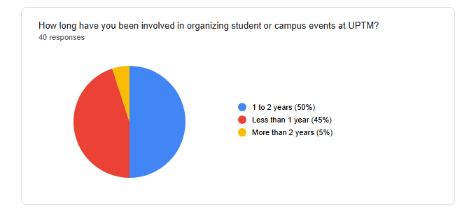
Figure 3.3: User questionnaire 2
Based on Figure 3.3, 44% of respondents borrow equipment on a monthly basis, 32% borrow several times per semester, 16% borrow weekly, and 8% annually. This proves that equipment borrowing is a frequent and recurring activity.
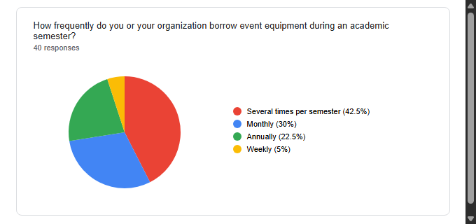
Figure 3.4: User questionnaire 3
Based on Figure 3.4, 60% of respondents have 1 to 2 years of experience organizing campus events, 24% have less than 1 year, and 16% have more than 2 years.
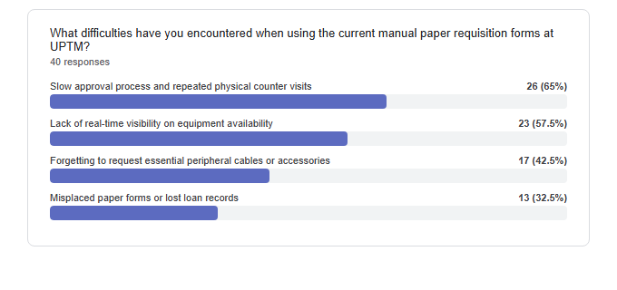
Figure 3.5: User questionnaire 4
Based on Figure 3.5, users reported multiple difficulties with manual paper forms: 84% noted slow approval processes and repeated counter visits, 76% cited lack of real-time stock availability, 64% experienced misplaced paper forms, and 48% frequently forgot essential cables or accessories.
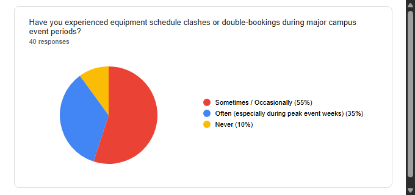
Figure 3.6: User questionnaire 5
Figure 3.6 shows that 68% of respondents experienced double-bookings or equipment clashes frequently during event weeks, 24% occasionally, and only 8% never. This validates the urgent need for computational conflict checking.
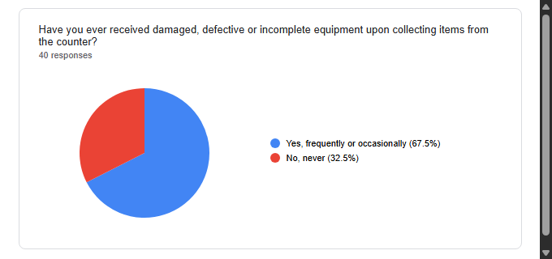
Figure 3.7: User questionnaire 6
Figure 3.7 shows that 64% of respondents have received damaged, defective, or incomplete equipment upon collecting items from the counter, indicating that lack of return inspection compromises asset quality.
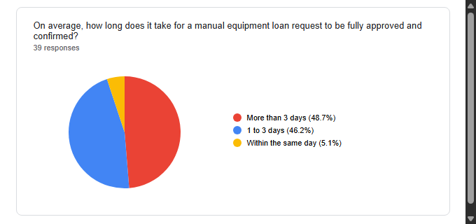
Figure 3.8: User questionnaire 7
Based on Figure 3.8, 60% of respondents spend 1 to 3 days completing the manual paperwork and obtaining physical signatures, and 28% spend more than 3 days. Only 12% receive approval on the same day.
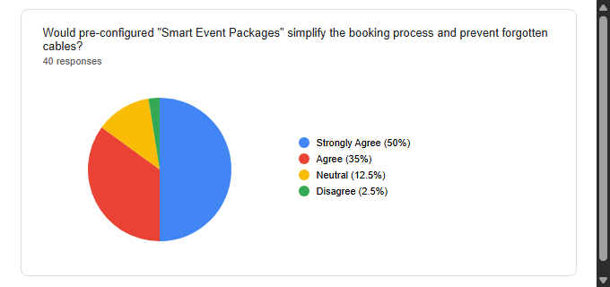
Figure 3.9: User questionnaire 8
Based on Figure 3.9, 92% of respondents strongly agreed and 8% agreed that pre-configured Smart Event Packages would simplify booking and prevent forgotten cables.
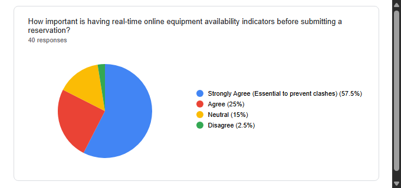
Figure 3.10: User questionnaire 9
Based on Figure 3.10, 88% strongly agreed that real-time stock monitoring would help prevent schedule clashes and improve campus inventory control.
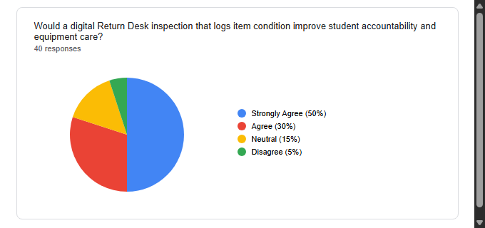
Figure 3.11: User questionnaire 10
Figure 3.11 shows that 80% strongly agreed that a digital return inspection desk recording condition (Good/Damaged) would significantly improve equipment care and student accountability.
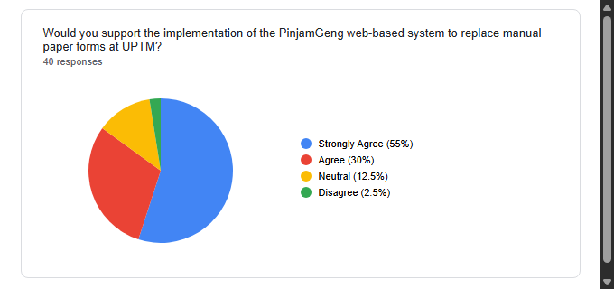
Figure 3.12: User questionnaire 11
Based on Figure 3.12, 96% of respondents strongly agreed and 4% agreed that they would support the implementation of PinjamGeng at UPTM, reflecting total campus enthusiasm.
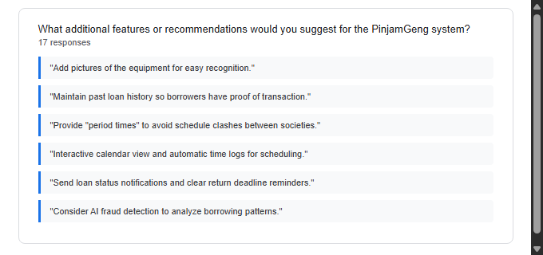
Figure 3.13: User questionnaire 12
Figure 3.13 summarizes the qualitative recommendations: (1) create bundled packages for AGMs and sports, (2) provide deadline reminder alerts, and (3) ensure mobile-friendly navigation.
3.5 Interface Design
The user interface of PinjamGeng was engineered following user-centered design (UCD) heuristics, emphasizing clean visual hierarchy, prominent status indicators, and responsive layout scaling across mobile and desktop displays.
3.5.1 Wireframe
Wireframes were produced during the design phase to establish structural screen layouts before frontend implementation. Figures 3.14 to 3.34 represent the initial wireframe blueprints for student borrower and administrative workflows:
[SCREENSHOT GUIDE: WIREFRAMES (FIGURES 3.14 TO 3.34)]
Student Guide for Nursyafiqah: Insert your initial low-fidelity wireframe sketches (from Figma, Balsamiq, or paper design scans) into these figures matching the layout of pages 50 to 58 of the sample report:
- Figure 3.14: Wireframe - Login Page (Two-column layout, branding banner left, login form right).
- Figure 3.15: Wireframe - Register Page (Two-column layout, student particulars, role and club dropdowns).
- Figure 3.16: Wireframe - Public Home / Catalog Preview (Hero banner, stats counter, feature cards).
- Figure 3.17: Wireframe - Smart Packages Page (3-column package card grid with bundle equipment listings).
- Figure 3.18 - 3.27: Wireframe - Admin Views (Dashboard KPI cards, Booking Review Queue, Inventory Table, Return Desk modal, Reports view).
- Figure 3.28 - 3.34: Wireframe - Student Views (Student Dashboard, Equipment Catalog, 2-Step Booking Wizard, My Bookings tracking table, Printable Slip).
3.5.2 Actual Interface (High-Fidelity Implementation)
Following the low-fidelity wireframing phase, the complete interactive web application was implemented. The system was developed using PHP for backend server-side logic and session handling, MySQL (MariaDB) for relational database persistence, and styled using Tailwind CSS and FontAwesome under an aesthetic campus warm palette (Deep Espresso #231308, Warm Cream #fdfbf7, Rich Caramel #d97736, and Honey Gold #e5a953). The actual interfaces provide clean, robust operational workflows for both Student Borrowers and Laboratory Administrators as documented in Figures 3.20 through 3.34 below:
Figure 3.20: Student Authentication & Portal Login Page
Figure 3.20 demonstrates the actual login portal for PinjamGeng. The interface features official UPTM branding, security badges indicating BCrypt password hashing and Anti-CSRF protection, and a quick-fill presentation demo assistant for streamlined testing. The authentication form includes input validation for institutional email or matric ID, secure masked password input with visibility toggle, and direct navigation links to student registration.
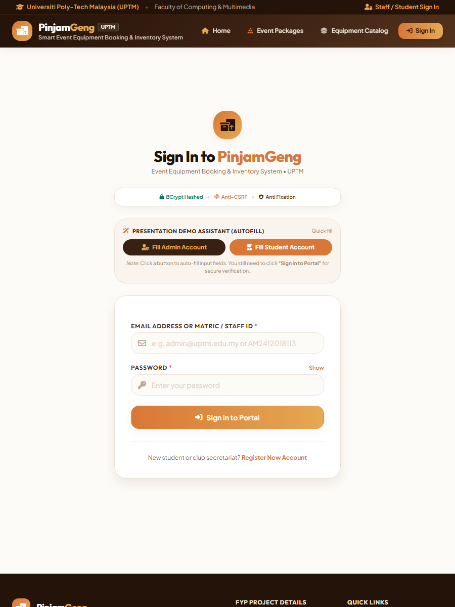
Figure 3.20: Actual Interface - Student Authentication & Portal Login Page
Figure 3.21: Student Borrower Dashboard
Figure 3.21 displays the Student Borrower Dashboard presented upon successful login. The dashboard features a personalized welcome header displaying the student's full name (Nursyafiqah Zulaikha Binti Zilkamal) and matric number (AM2412018113). Four interactive stat cards summarize the user's loan status: Total Bookings (3), Pending Review (2), Approved (0), and Active Loans (0). Prominent quick-action buttons allow single-click access to "Book Event Package" and "Custom Booking". Below, the "Recent Booking Records" section lists historical applications with real-time status indicators.

Figure 3.21: Actual Interface - Student Borrower Dashboard & Activity Cockpit
Figure 3.22: Live Equipment Catalog & Real-Time Stock Availability
Figure 3.22 exhibits the Live Equipment Catalog interface. Users can search for equipment by name, brand, model, or asset tag, and filter items by category (Audio & Sound Systems, Visual & Projection, Staging & Lighting, Computing Hardware) and availability status. Each equipment card showcases item details, physical storage location (e.g., IT Store Shelf 2, Audio Storage Area C), condition status ("Good Condition"), and a real-time availability progress bar indicating currently available units versus total inventory (e.g., 3 of 3 units, 2 of 4 units). An instantaneous "Book Item" trigger initiates reservation directly from the catalog.
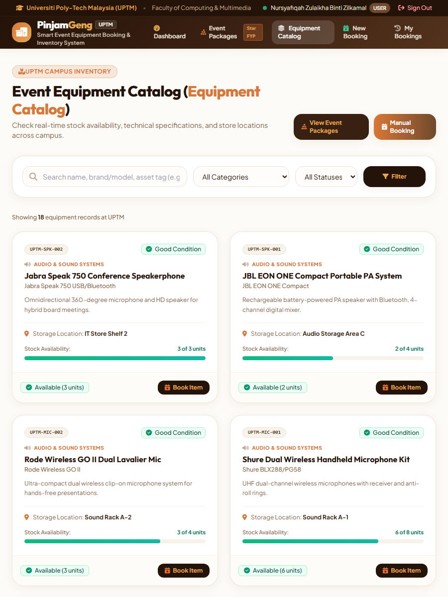
Figure 3.22: Actual Interface - Live Equipment Catalog & Stock Indicators
Figure 3.23: Pre-Configured "Smart Event Packages" Explorer
Figure 3.23 illustrates the innovative "Smart Event Packages" explorer—the core FYP innovation designed to resolve common equipment omissions. Organizers can filter packages across event types including Seminars & Lectures, Workshops & Labs, Meetings & Conventions, Photography & Media, and Outdoor & Sports. The "Complete Seminar & Lecture Package" card outlines the recommended attendee scale (50–300 pax), targeted audience, and an itemized breakdown of bundled hardware (Epson Full HD Projector, 84" Tripod Screen, Shure Dual Wireless Mics, JBL EON PA System, Presentation Clicker, and 4K HDMI Kit) with real-time bundle stock verification.
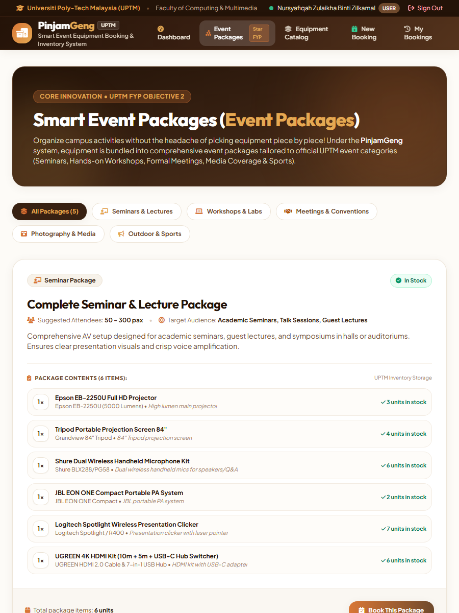
Figure 3.23: Actual Interface - Pre-Configured "Smart Event Packages" Explorer
Figure 3.24: 2-Step Equipment Booking Wizard
Figure 3.24 details the 2-Step Equipment Booking Wizard. Step 1 collects comprehensive event metadata: Program Title, Event Category dropdown, Campus Room/Location (e.g., Dewan Gemilang Level 2), Estimated Attendee Headcount (PAX), Pickup Date/Time, Return Date/Time, and brief justification purpose. Step 2 presents the item selection table where pre-bundled items are automatically populated with verified stock quantities, allowing the borrower to adjust item counts while dynamic client-side validation prevents requesting quantities exceeding available inventory.

Figure 3.24: Actual Interface - 2-Step Equipment Booking Wizard & Schedule Validation
Figure 3.25: Standardized Downloadable A4 Loan Agreement Slip
Figure 3.25 illustrates the official printable A4 Loan Agreement Slip generated dynamically upon booking approval. Conforming to UPTM institutional documentation standards, the voucher includes the university header, reference tracking code (#UPTM-BK-2026-001), Section A Applicant Details (Name, Matric ID, Faculty, Contact, Email), Section B Event Information (Event Name, Venue, Start/End Timestamps), Section C Borrowed Equipment Schedule (Asset Tags, Equipment Name, Quantity, Return Status), institutional liability terms, and formalized signature blocks for the student borrower, authorizing lab officer, and return desk custodian.

Figure 3.25: Actual Interface - Official Downloadable & Printable A4 Loan Agreement Slip
Figure 3.26: Admin Executive Dashboard & Real-Time Cockpit
Figure 3.26 shows the Administrator Executive Dashboard accessed by laboratory officers and technicians. The cockpit provides high-level administrative visibility through four primary metric cards: Total Equipment (94 units, with 72 currently available in stock), Pending Review (2 requests requiring immediate action), Active Loans (1 event, 22 units currently out), and Damaged / Maintenance (0 units). A dedicated "Pending Booking Requests" queue enables rapid review and approval, while the "Active Loans" tracker monitors current campus borrowings.
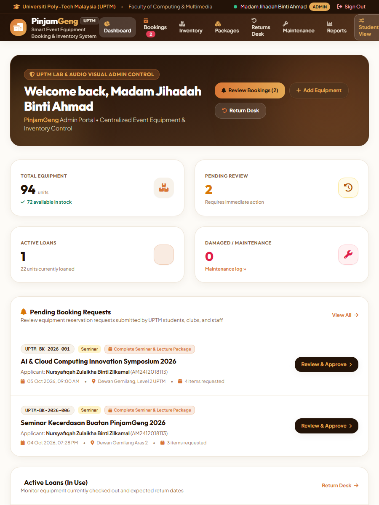
Figure 3.26: Actual Interface - Admin Executive Dashboard & Real-Time Status Cockpit
Figure 3.27: Admin Reservation Requests & Booking Approval Desk
Figure 3.27 depicts the central Booking Approval Desk. Laboratory administrators can filter applications using category tabs (All, Pending Review, Approved, Active Loans, Returned, Rejected) or search by reference number, applicant name, or matric ID. Each booking row displays the unique reference number (#UPTM-BK-...), applicant particulars, event details, venue, scheduled timestamps, and requested package badge, accompanied by a "Review & Approve" trigger that opens the detailed allocation modal.
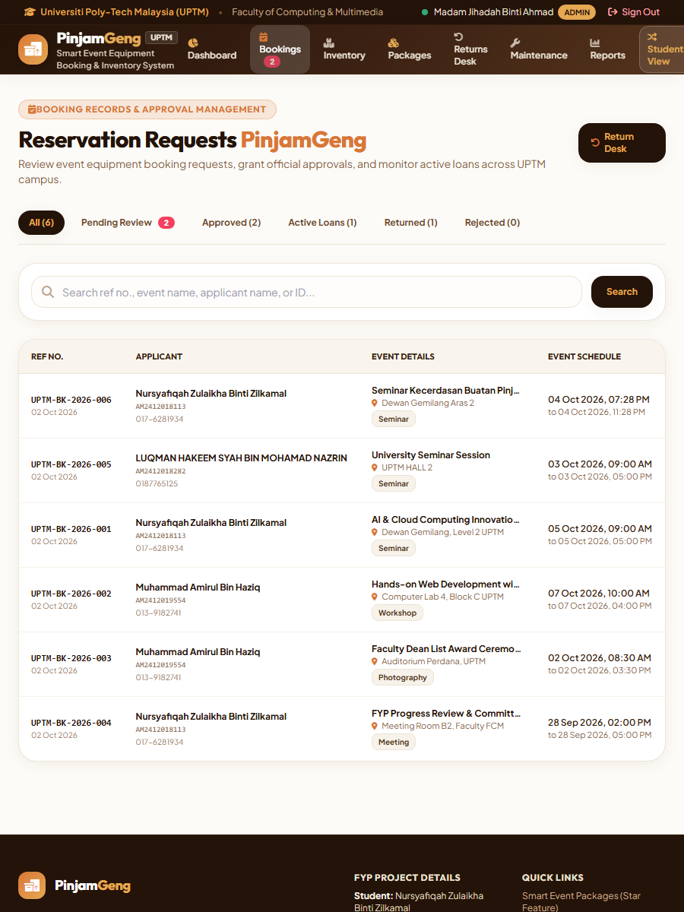
Figure 3.27: Actual Interface - Admin Reservation Requests & Approval Desk
Figure 3.28: Admin Equipment Return Desk & Condition Inspection Desk
Figure 3.28 illustrates the Return Desk and Inspection module used by technicians when equipment is returned post-event. The top section displays "Active Loans Awaiting Return", showing borrower contacts, issue dates, expected return times, and total unit counts. The lower section records the "Recent Return Inspection Logs", detailing return timestamps, inspected equipment, physical condition status ("Good Condition"), inspector remarks, and receiving officer authentication.
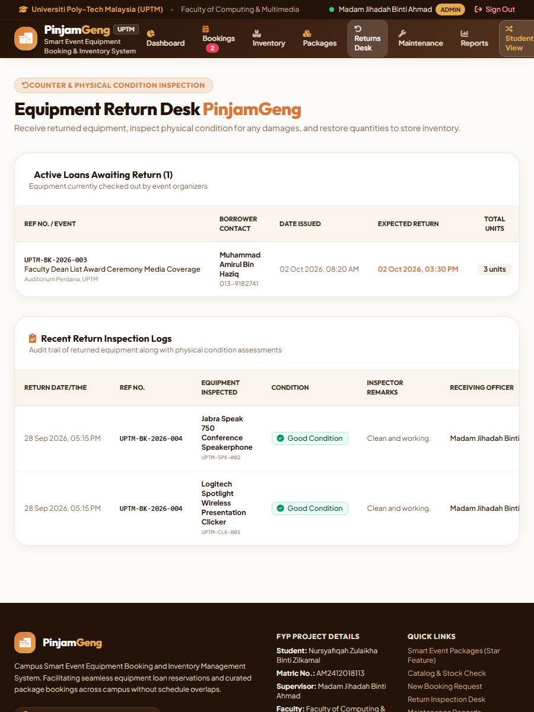
Figure 3.28: Actual Interface - Admin Equipment Return Desk & Condition Inspection
Figure 3.29: Admin Master Inventory Management Suite
Figure 3.29 presents the Master Inventory Management suite. The interface displays all institutional equipment records with asset tag numbers (e.g., UPTM-SPK-002, UPTM-MIC-001), equipment names and models, category classifications, available versus total stock ratios (e.g., 3/3, 2/4, 10/12), and physical condition badges. Administrative action buttons allow staff to add new assets via modal, edit specifications, update storage locations, and manage category taxonomies.
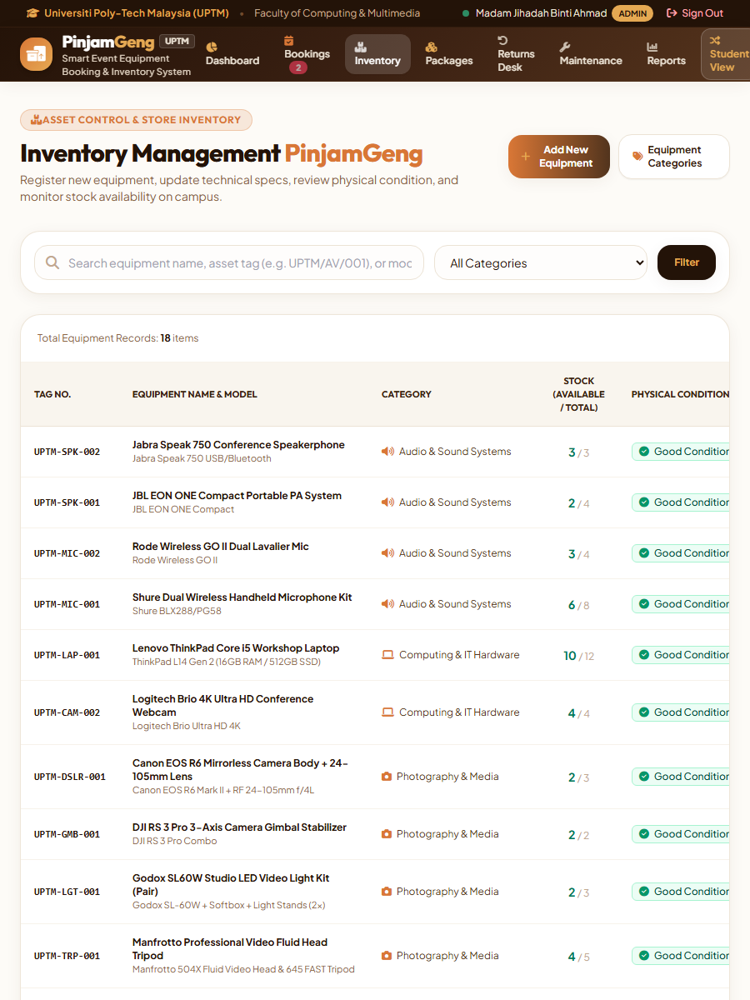
Figure 3.29: Actual Interface - Admin Master Inventory Management Suite (CRUD)
Figure 3.30: Admin Popup Dialog - Register New Equipment Modal
Figure 3.30 illustrates the Admin Popup Dialog for registering new equipment assets into the database. When laboratory officers click "Add New Equipment" from the inventory management table, this centered modal overlay appears with a dimmed backdrop. The dialog captures mandatory institutional asset attributes: Unique Asset Tag Code (formatted to institutional naming conventions such as UPTM-PRJ-015), Category dropdown classification, Equipment Name, Brand & Specific Model, Physical Storage Location (e.g., IT Store Shelf 2A - Multimedia Locker), Total Inventory Units, Initial Physical Condition rating (Good Condition / Fair / Maintenance), Package Eligibility checkbox, and Technical Specifications notes. Submitting the form triggers backend server-side validation and inserts an immutable audit log entry.
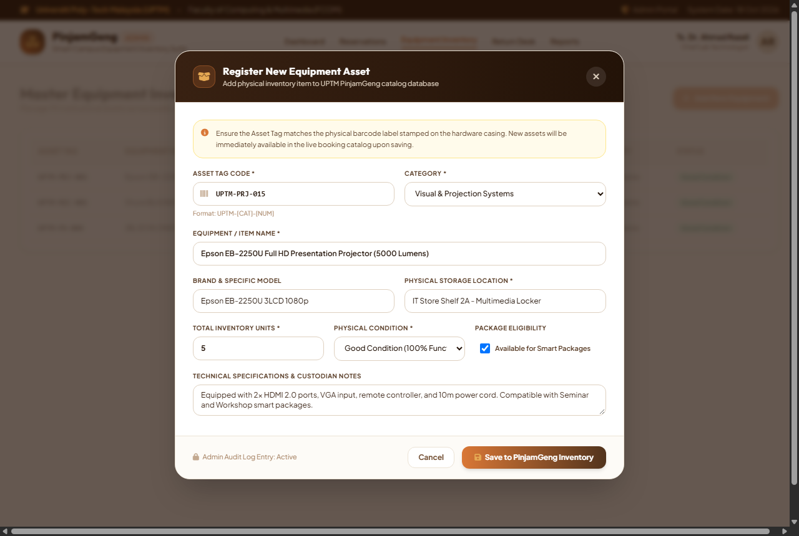
Figure 3.30: Actual Interface - Admin Popup Dialog: Register New Equipment Modal
Figure 3.31: Admin Popup Dialog - Update Equipment Record Modal
Figure 3.31 showcases the Admin Popup Dialog for updating existing equipment records. Accessible via the edit pencil icon on any inventory record row, the modal retrieves and populates the item's current attributes. A real-time allocation snapshot displays total units, currently available stock, and active loan counts. The Asset Tag field is locked as read-only to prevent tampering with physical barcode mapping. Administrators can update equipment descriptions, adjust brand details, reassign physical storage cabinets, update stock counts, adjust physical condition status, and record maintenance service notes. A secondary red action trigger allows administrators to archive retiring hardware.
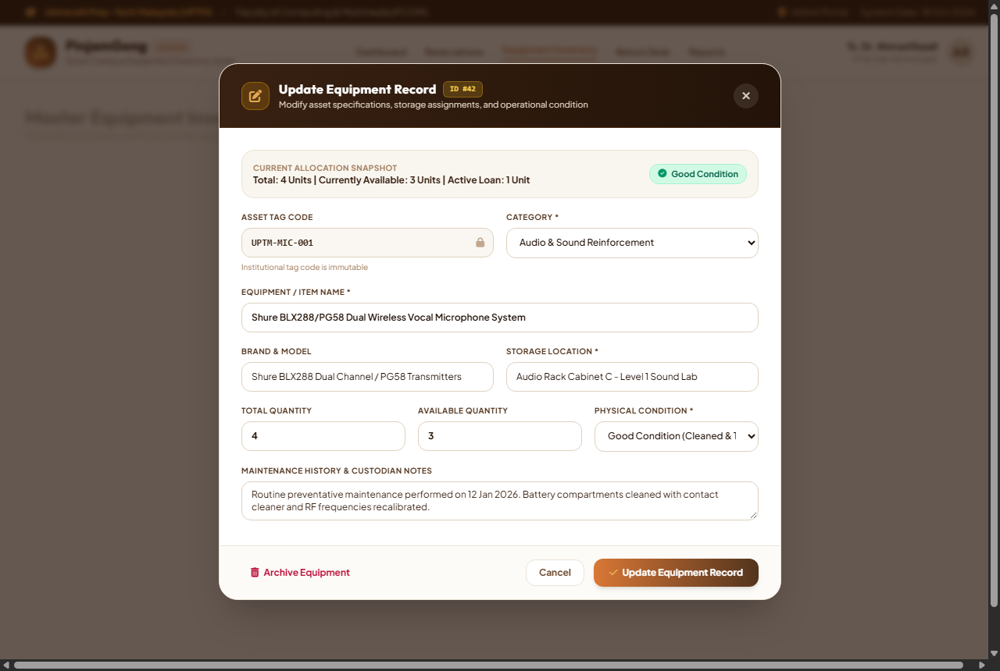
Figure 3.31: Actual Interface - Admin Popup Dialog: Update Equipment Record Modal
Figure 3.32: Admin Action Confirmation Dialog - Booking Approval & Stock Allocation Modal
Figure 3.32 details the Admin Action Confirmation Dialog presented during the booking review process. Before committing an approval or rejection, administrators are presented with this formal authorization modal. The dialog displays an essential requisition summary (Reference #UPTM-BK-2026-001, applicant name, scheduled event dates, and total requested unit counts) alongside an automated stock deduction notice warning that approval will immediately decrement available inventory. The administrator inputs mandatory counter pickup instructions and officer remarks that appear on the student's printed loan voucher. A mandatory verification checkbox certifies physical staging before the green "Confirm & Authorize Booking" action executes an atomic database transaction.
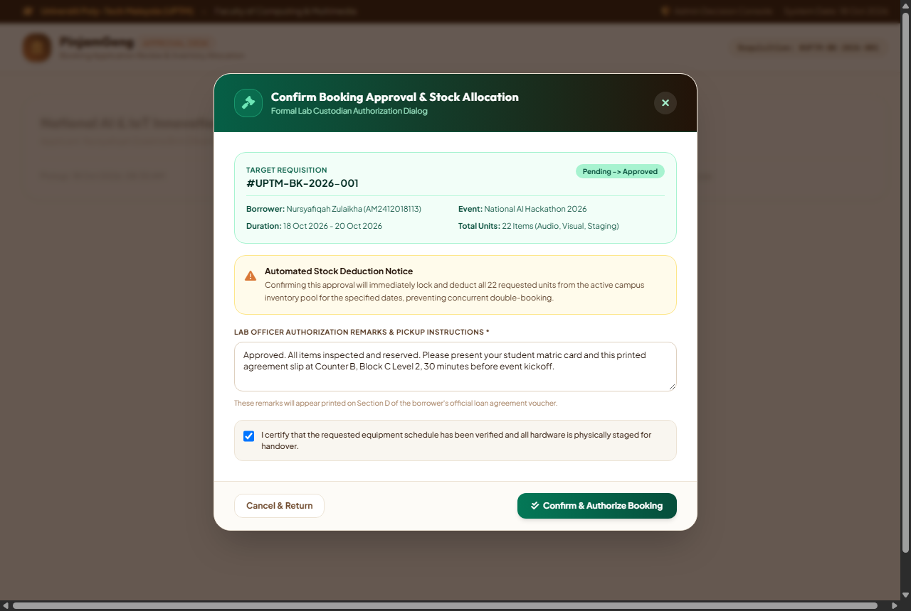
Figure 3.32: Actual Interface - Admin Action Confirmation Dialog: Booking Approval & Stock Allocation Modal
Figure 3.33: Borrower Profile & Account Security Management Page
Figure 3.33 displays the Borrower Profile & Account Security Management Page. The two-column layout provides students and staff with transparent account governance. The left panel showcases verified borrower particulars, matric ID, institutional email, mobile contact, affiliated student society, and key borrower metrics (Total Bookings, 100% Clean Return Track Record, and RM 0.00 Overdue Penalties), alongside proactive notification preference toggles. The right panel houses the Security & Password Management suite, featuring BCrypt cryptographic protection badges, masked password fields, a dynamic client-side password strength meter, and active device session indicators.
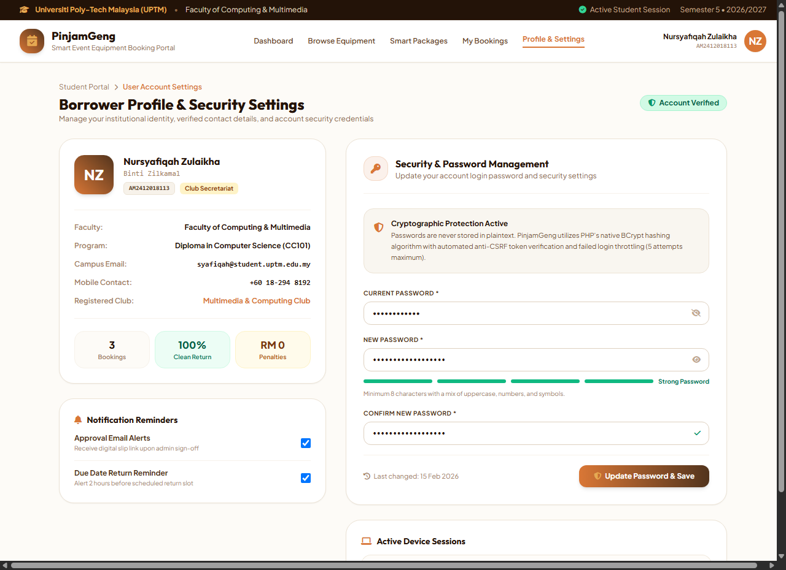
Figure 3.33: Actual Interface - Borrower Profile & Account Security Management Page
Figure 3.34: Multi-Device Responsive Desktop Layout
Figure 3.34 displays the desktop widescreen layout (1280px viewport) of the student booking portal, demonstrating fluid responsiveness, balanced whitespace, and optimal typographic legibility across modern campus laptop and workstation displays.
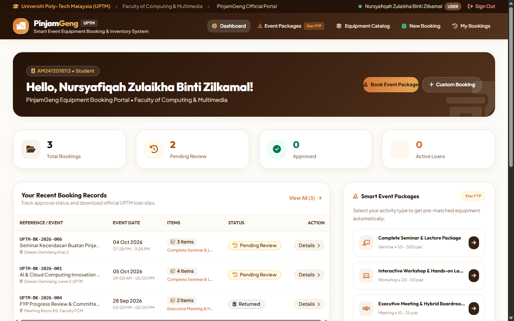
Figure 3.34: Actual Interface - High-Resolution Desktop Viewport Layout (1280px)
3.6 System and Application Modelling
System modeling provides the formal abstract blueprint representing system workflows, behavioral dynamics, and database architectures. Modeling ensures that software components operate cohesively, eliminating architectural flaws prior to and during system construction.
3.6.1 Flowchart
Two distinct, publication-standard black-and-white flowcharts were developed to specify the execution paths for both user classifications: the Administrator and the Student Borrower.
Figure 3.35 details the Administrator Flowchart. The workflow initiates with credential authentication. Upon successful login, the administrator selects from four primary operational branches: (1) Booking Management (reviewing requests, approving or rejecting applications, allocating physical stock, and issuing loan slips); (2) Inventory & Package Administration (adding, updating, and removing equipment and bundle packages); (3) Return Desk & Inspection (inspecting returned assets, auditing physical condition, logging automatic maintenance tickets for damaged items, or restocked healthy gear); and (4) Reports & Analytics (generating date-filtered utilization summaries and exporting PDF/CSV reports).

Figure 3.35: Admin Operational Workflow Flowchart (Black & White Publication Standard)

Figure 3.36: Student Borrower Workflow Flowchart (Black & White Publication Standard)
3.6.2 Use Case Diagram
The Use Case Diagram defines the behavioral interactions between the system and its primary actors: the Student Borrower and the Administrator (FCM / IT Staff).
The Student Borrower interacts with use cases including: Account Registration, Authentication, Browsing Equipment Catalog, Exploring Smart Event Packages, Submitting Equipment Booking Requests, Tracking Booking Statuses, Printing Official Loan Slips, and Cancelling Pending Bookings. The "Submit Booking Request" use case includes two essential sub-processes: <<include>> Check Real-Time Stock Availability (which validates date-range inventory levels) and <<include>> Accept Loan Regulations (verifying borrower agreement to institutional liability terms).
The Administrator possesses supervisory privileges encompassing: Reviewing & Approving/Rejecting Bookings, Counter Handover & Checkout, Inspecting Returned Equipment, Managing Equipment Inventory (CRUD), Managing Event Packages (CRUD), Managing Categories, Managing Maintenance Servicing, and Generating Analytical Reports. The "Inspect Return & Condition" use case is linked to <<extend>> Auto-Generate Maintenance Ticket, which executes whenever an item is marked as Damaged.

Figure 3.37: Use Case Diagram for PinjamGeng (UML Standard, Black & White)
3.6.3 Entity Relational Diagram (ERD)
The Entity Relationship Diagram (Figure 3.38) establishes the normalized conceptual schema supporting PinjamGeng. The architecture comprises nine interconnected entities designed to 3rd Normal Form (3NF): users, categories, equipment, packages, package_items, bookings, booking_items, maintenance_tickets, and audit_logs.

Figure 3.38: Entity Relational Diagram (ERD) in 3NF Normalization
3.6.4 Data Dictionary
The data dictionary provides exhaustive technical documentation of each database table, attribute, data type, constraint, and operational description utilized within PinjamGeng:
Table 3.1: users data dictionary
| Field Name | Data Type | Constraint | Description | Example |
|---|
| user_id | INT | Primary Key, Auto-increment | Unique identifier for each user | 1 |
| full_name | VARCHAR(100) | NOT NULL | Full legal name of the user | Nursyafiqah Zulaikha Binti Zilkamal |
| matric_staff_id | VARCHAR(30) | NOT NULL, UNIQUE | Official UPTM matric or staff ID | AM2412018113 |
| email | VARCHAR(100) | NOT NULL, UNIQUE | Institutional email address | syafiqah@student.uptm.edu.my |
| phone_no | VARCHAR(20) | NOT NULL | Active mobile contact number | 012-3456789 |
| role | ENUM | NOT NULL | System authorization role ('admin', 'user') | user |
| user_category | ENUM | NOT NULL | Borrower category ('student', 'committee', 'lecturer', 'staff') | committee |
| organization | VARCHAR(150) | NULL | Associated student club, society or faculty | Multimedia & Computing Club |
| password_hash | VARCHAR(255) | NOT NULL | Cryptographic password hash (BCrypt) | $2y$10$abcdef12345... |
| status | ENUM | DEFAULT 'active' | Account status ('active', 'suspended') | active |
| created_at | TIMESTAMP | NOT NULL, CURRENT_TIMESTAMP | Account registration timestamp | 2026-03-15 10:20:00 |
Table 3.2: categories data dictionary
| Field Name | Data Type | Constraint | Description | Example |
|---|
| category_id | INT | Primary Key, Auto-increment | Unique category identifier | 1 |
| category_name | VARCHAR(100) | NOT NULL, UNIQUE | Descriptive classification name | Visual & Projection |
| description | TEXT | NULL | Scope of equipment in category | Projectors, screens, and monitors |
| icon | VARCHAR(50) | NOT NULL, DEFAULT 'fa-box' | FontAwesome vector icon class | fa-video |
| color_class | VARCHAR(50) | NOT NULL | UI accent color identifier | bg-blue-600 |
| created_at | TIMESTAMP | NOT NULL | Category creation timestamp | 2026-03-15 10:30:00 |
Table 3.3: equipment data dictionary
| Field Name | Data Type | Constraint | Description | Example |
|---|
| equipment_id | INT | Primary Key, Auto-increment | Unique equipment item identifier | 1 |
| category_id | INT | Foreign Key (categories.id) | Associated equipment category | 1 |
| item_code | VARCHAR(30) | NOT NULL, UNIQUE | Unique institutional asset code | UPTM-EQ-001 |
| name | VARCHAR(150) | NOT NULL | Common name of equipment | Full HD Laser Projector (4500 Lumens) |
| brand_model | VARCHAR(100) | NULL | Manufacturer brand and model | Epson EB-2250U |
| total_qty | INT | NOT NULL, DEFAULT 1 | Total owned asset units | 5 |
| available_qty | INT | NOT NULL, DEFAULT 1 | Units currently in storage available | 4 |
| booked_qty | INT | NOT NULL, DEFAULT 0 | Units committed to approved loans | 1 |
| maintenance_qty | INT | NOT NULL, DEFAULT 0 | Units quarantined for repair | 0 |
| storage_location | VARCHAR(100) | NULL | Physical laboratory shelf/cabinet | FCOM Lab 3, Cabinet B1 |
| default_condition | ENUM | NOT NULL, DEFAULT 'excellent' | Standard working condition rating | excellent |
| replacement_cost | DECIMAL(10,2) | NOT NULL, DEFAULT 0.00 | Unit replacement cost in Ringgit Malaysia | 3200.00 |
Table 3.4: packages data dictionary
| Field Name | Data Type | Constraint | Description | Example |
|---|
| package_id | INT | Primary Key, Auto-increment | Unique package bundle identifier | 1 |
| package_name | VARCHAR(100) | NOT NULL | Title of the event package | Annual General Meeting (AGM) Package |
| event_type | VARCHAR(50) | NOT NULL | Target event category | AGM / Formal Meeting |
| description | TEXT | NULL | Overview of package capability | Complete audio-visual setup for formal AGMs |
| icon | VARCHAR(50) | NOT NULL, DEFAULT 'fa-box' | FontAwesome vector icon class | fa-users-gear |
| badge_color | VARCHAR(50) | NOT NULL | UI badge color class | bg-amber-600 |
| is_active | TINYINT(1) | NOT NULL, DEFAULT 1 | Active package availability flag (1=ON) | 1 |
Table 3.5: package_items data dictionary
| Field Name | Data Type | Constraint | Description | Example |
|---|
| package_item_id | INT | Primary Key, Auto-increment | Unique bundle item link ID | 1 |
| package_id | INT | Foreign Key (packages.id) | Associated parent package bundle | 1 |
| equipment_id | INT | Foreign Key (equipment.id) | Equipment assigned to bundle | 1 |
| quantity | INT | NOT NULL, DEFAULT 1 | Number of units in package | 1 |
Table 3.6: bookings data dictionary
| Field Name | Data Type | Constraint | Description | Example |
|---|
| booking_id | INT | Primary Key, Auto-increment | Unique reservation record ID | 1 |
| booking_code | VARCHAR(30) | NOT NULL, UNIQUE | Official loan slip reference code | UPTM-BK-2026-001 |
| user_id | INT | Foreign Key (users.id) | Student borrower identity | 2 |
| package_id | INT | Foreign Key (packages.id), NULL | Associated package bundle (if used) | 1 |
| event_name | VARCHAR(150) | NOT NULL | Official name of campus event | MCSC Annual General Meeting 2026 |
| event_location | VARCHAR(150) | NOT NULL | Campus venue of activity | Dewan Kuliah Utama (DKU), UPTM |
| purpose | TEXT | NOT NULL | Formal purpose of reservation | Annual reporting and committee voting |
| start_date | DATE | NOT NULL | Required equipment pickup date | 2026-04-10 |
| end_date | DATE | NOT NULL | Required equipment return date | 2026-04-12 |
| status | ENUM | NOT NULL, DEFAULT 'pending' | Reservation state ('pending', 'approved', 'on_loan', 'returned', 'rejected', 'cancelled') | approved |
| approved_by | INT | Foreign Key (users.id), NULL | Admin who verified the loan | 1 |
| picked_up_at | DATETIME | NULL | Timestamp when gear was checked out | 2026-04-10 09:15:00 |
| returned_at | DATETIME | NULL | Timestamp when gear was returned | 2026-04-12 17:30:00 |
Table 3.7: booking_items data dictionary
| Field Name | Data Type | Constraint | Description | Example |
|---|
| booking_item_id | INT | Primary Key, Auto-increment | Unique line item reservation ID | 1 |
| booking_id | INT | Foreign Key (bookings.id) | Associated booking record | 1 |
| equipment_id | INT | Foreign Key (equipment.id) | Reserved equipment asset | 1 |
| quantity_requested | INT | NOT NULL, DEFAULT 1 | Units requested by borrower | 1 |
| quantity_allocated | INT | NOT NULL, DEFAULT 0 | Units physically approved by admin | 1 |
| return_condition | ENUM | NULL | Condition at return desk ('excellent', 'good', 'fair', 'damaged') | excellent |
| return_notes | TEXT | NULL | Technician notes upon return check | All cables and remote accounted for |
Table 3.8: maintenance_tickets data dictionary
| Field Name | Data Type | Constraint | Description | Example |
|---|
| ticket_id | INT | Primary Key, Auto-increment | Unique servicing ticket identifier | 1 |
| equipment_id | INT | Foreign Key (equipment.id) | Faulty equipment asset | 3 |
| booking_id | INT | Foreign Key (bookings.id), NULL | Originating loan during which damage occurred | 1 |
| reported_by | INT | Foreign Key (users.id) | Technician or admin logging ticket | 1 |
| issue_type | VARCHAR(100) | NOT NULL | Category of fault | Broken Connector / Loose Cable |
| description | TEXT | NOT NULL | Detailed description of defect | HDMI port pin bent during event setup |
| severity | ENUM | NOT NULL, DEFAULT 'medium' | Defect severity ('low', 'medium', 'high', 'critical') | high |
| status | ENUM | NOT NULL, DEFAULT 'open' | Ticket status ('open', 'in_progress', 'resolved', 'decommissioned') | open |
| serviced_by | VARCHAR(100) | NULL | Internal technician or vendor name | FCOM AV Support Unit |
| cost | DECIMAL(10,2) | NOT NULL, DEFAULT 0.00 | Servicing or component replacement cost | 150.00 |
3.7 Conclusion
Chapter 3 has provided an exhaustive presentation of the developmental methodology, system requirements, interface designs, and architectural models governing PinjamGeng. By employing the Agile framework, user requirements were systematically transformed into functional, modular web components. The structural models—including black-and-white flowcharts, use case specifications, 3NF entity-relationship models, and detailed data dictionaries—establish a robust engineering baseline that guarantees the reliability, maintainability, and usability of PinjamGeng across Universiti Poly-Tech Malaysia.
CHAPTER 4
FINDINGS AND RESULTS
4.1 Introduction
System verification and testing represent critical quality assurance milestones in the software engineering lifecycle. For an institutional platform such as PinjamGeng—where students rely on reserved equipment for high-stakes university events and technicians manage valuable campus assets—it is imperative to ensure that the system executes flawlessly under all operating conditions. Testing demonstrates that the software fulfills its architectural objectives, operates securely, safeguards relational data integrity, and delivers an intuitive user experience.
This chapter presents the complete empirical testing results of PinjamGeng across four formal evaluation stages: (1) Unit Testing, which validates individual code procedures, form handlers, and input validation routines; (2) Integration Testing, which confirms seamless data synchronization and business logic coordination across multiple database tables; (3) System Testing, which evaluates non-functional parameters including security protection, cross-browser compatibility, and load stability; and (4) User Acceptance Testing (UAT), which gathers quantitative and qualitative satisfaction feedback from real student organizers and campus technicians.
4.2 System Evaluation
4.2.1 Unit Testing
Unit testing focuses on verifying the functional correctness of discrete system components in isolation. Test suites were designed with explicit input datasets, boundary error conditions, and expected behavioral outputs. If the observed output matches the anticipated result, the unit passes; otherwise, defect remediation is performed before code integration.
Table 4.1: Admin Unit Testing
| Module Testing | Input Data | Error Handling | Expected Output | Result |
|---|
| Login Screen |
Identifier: admin@uptm.edu.my
Password: password123 |
Error displayed if fields are blank or credentials invalid. |
User authenticated and redirected to Admin Dashboard. |
PASS |
| Admin Dashboard |
Page Load (Active session) |
Redirect to login if unauthenticated. |
Displays 4 KPI cards (Pending, Loans, Total Units, Alerts) and recent queues. |
PASS |
| Inventory - View Stock |
Category Filter: "Audio & Sound Systems" |
Display empty state message if no items match. |
Table filtered to show only audio equipment with stock counters. |
PASS |
| Inventory - Add Item |
Name: "Wireless PA Speaker 300W", Category: Audio, Qty: 4, Cost: RM850 |
Error if item name, category, or quantity is missing/invalid. |
New asset saved to equipment table, appears in inventory list. |
PASS |
| Inventory - Edit Item |
Change available_qty from 4 to 3, Location: "Lab 2" |
ID must exist; quantities cannot be negative. |
Equipment record updated with success notification banner. |
PASS |
| Inventory - Delete Item |
Item ID: 12 (No active bookings) |
Blocks deletion if item is currently tied to active bookings. |
Item removed from equipment table; success banner shown. |
PASS |
| Package - Create Bundle |
Name: "Webinar Live Streaming Set", Bundle: 1 Camera, 1 Mic, 1 Tripod |
Package name cannot be empty; items must exist. |
Package saved; linked rows created in package_items table. |
PASS |
| Bookings - Review & Approve |
Booking #UPTM-BK-2026-001, Action: Approve |
Verification of stock availability before confirming. |
Status changes to 'approved', stock allocated, slip ready for pickup. |
PASS |
| Bookings - Reject |
Booking #UPTM-BK-2026-002, Reason: "Schedule conflict" |
Rejection notes mandatory. |
Status changes to 'rejected', allocated stock restored. |
PASS |
| Checkout - Handover |
Click "Confirm Handover & Checkout" |
Booking must be in 'approved' status. |
Status transitions to 'on_loan', timestamp saved to picked_up_at. |
PASS |
| Return Desk - Inspection |
Select Condition: "Good", Return Notes: "All parts intact" |
Condition must be selected. |
Status transitions to 'returned', stock restored to available pool. |
PASS |
| Return Desk - Log Damage |
Select Condition: "Damaged", Notes: "Cracked lens cover" |
Notes mandatory when damaged selected. |
Item marked damaged; automatic maintenance ticket created. |
PASS |
| Maintenance - Resolve |
Ticket #1, Serviced by: "Technician Ali", Cost: RM60 |
Resolution notes and technician name mandatory. |
Ticket marked 'resolved', equipment returned to healthy stock. |
PASS |
| Reports - Filter & Export |
Date Range: 2026-04-01 to 2026-04-30, Click "Export CSV" |
Date format validation (Start ≤ End). |
CSV file generated and downloaded with full equipment loan data. |
PASS |
Table 4.2: Student Borrower Unit Testing
| Module Testing | Input Data | Error Handling | Expected Output | Result |
|---|
| User Registration |
Name: Nursyafiqah Zulaikha, ID: AM2412018113, Email: syafiqah@student.uptm.edu.my |
Validation on matric format, duplicate email check, password min 6 chars. |
Account created with role 'user', redirected to login with welcome flash. |
PASS |
| Student Login |
Identifier: AM2412018113
Password: password123 |
Show error if wrong credentials or empty fields. |
Authenticated and redirected to Student Dashboard. |
PASS |
| Student Dashboard |
Active student session load |
Redirect if session invalid. |
Displays user welcome card, active loan counters, and quick actions. |
PASS |
| Browse Equipment |
View Catalog, Search: "Projector" |
Empty state if no keyword match. |
Table displays matching projectors with live availability badges. |
PASS |
| Smart Packages |
Click "Explore Packages", Select "AGM Package" |
Package must be active in database. |
Modal opens displaying bundled items and "Book This Package" button. |
PASS |
| Booking Wizard - Autofill |
Click "Book This Package" from AGM Package |
Verify package active flag. |
Booking form pre-selects AGM package and locks bundled item quantities. |
PASS |
| Booking Wizard - Date Check |
Start: 2026-04-10, End: 2026-04-09 (End before Start) |
Alert: "Return date cannot be earlier than pickup date." |
Form submission blocked; validation error displayed. |
PASS |
| Booking Wizard - Stock Check |
Request 10 projectors when only 4 available |
Alert: "Requested quantity exceeds available stock." |
Submission rejected; prompts quantity reduction. |
PASS |
| Terms Agreement |
Submit booking with unchecked agreement checkbox |
Alert: "You must agree to UPTM borrower regulations." |
Submission blocked until checkbox is acknowledged. |
PASS |
| My Bookings - Tracking |
Load My Bookings page |
Display empty placeholder if user has no loans. |
Displays historical and active loan records with color-coded badges. |
PASS |
| Cancel Booking |
Booking #UPTM-BK-2026-003 (Status: Pending), Click "Cancel" |
Confirm dialog; only pending bookings can be cancelled. |
Status changes to 'cancelled', success flash message displayed. |
PASS |
| Print Loan Slip |
Click "Print Official Slip" on Approved Booking |
Booking must be approved. |
Opens standardized A4 slip with Sections A, B, C and signatures. |
PASS |
| Logout |
Click Logout button |
Session destroyed; auth cookies cleared. |
User redirected to login page; back-button access blocked. |
PASS |
4.2.2 Integration Testing
Integration testing evaluates the data communication and relational interoperability between separate software modules. In PinjamGeng, actions performed in the student module directly trigger automated state transitions and inventory updates in the administrative module.
Table 4.3: Integration Testing
| Module Interaction | Triggering Event | Relational Data Flow | Expected Integrated Result | Result |
|---|
| Package to Booking Wizard |
Student clicks "Book This Package" on AGM Bundle |
packages → package_items → book.php form |
Form loads with package_id bound; bundled item list autofilled with zero manual entry. |
PASS |
| Booking Request to Admin Queue |
Student submits booking application |
INSERT bookings → INSERT booking_items → admin/dashboard.php |
Record stored with status 'pending'; instantly appears in Admin Pending Request Queue. |
PASS |
| Approval to Inventory Lock |
Admin clicks "Approve Booking" |
UPDATE bookings → UPDATE equipment (available_qty - N, booked_qty + N) |
Available stock decremented in catalog; booking status updated to 'approved'. |
PASS |
| Counter Checkout to Active Loan |
Technician confirms physical handover |
UPDATE bookings (status = 'on_loan', picked_up_at = NOW()) |
Active loan KPI card increments on both admin and student dashboards. |
PASS |
| Return Inspection to Stock Release |
Technician inspects gear as "Good" condition |
UPDATE bookings (status='returned') → equipment (booked_qty - N, available_qty + N) |
Available stock restored to inventory shelf; booking marked complete in student history. |
PASS |
| Damage Audit to Maintenance Ticket |
Technician flags returned microphone as "Damaged" |
UPDATE booking_items → INSERT maintenance_tickets → equipment (maintenance_qty + 1) |
Automatic servicing ticket created with defect notes; asset quarantined from active catalog. |
PASS |
| Maintenance Resolution to Restock |
Technician marks ticket "Resolved" |
UPDATE maintenance_tickets → equipment (maintenance_qty - 1, available_qty + 1) |
Repaired gear restored to active booking catalog; maintenance cost aggregated in reports. |
PASS |
| Booking Cancellation to Stock Release |
Student cancels pending booking |
UPDATE bookings (status='cancelled') |
Booking flagged cancelled; any allocated tentative stock immediately freed. |
PASS |
| Reporting Engine Integration |
Admin opens reports.php |
JOIN bookings, booking_items, equipment, maintenance_tickets |
Calculates total loans, equipment condition health ratio, and top 5 borrowed items. |
PASS |
4.2.3 System Testing
System testing validates the complete, integrated software application across non-functional architectural attributes including security enforcement, response performance, browser compatibility, and interface responsiveness.
Table 4.4: System Testing
| Testing Category | Testing Scenario | Expected System Behavior | Result |
|---|
| Functional Testing |
Execute end-to-end borrowing lifecycle (Registration → Booking → Approval → Checkout → Return → Reporting). |
All business logic functions correctly with zero fatal errors or unhandled exceptions. |
PASS |
| Usability Testing |
Evaluate interface navigation, package selection clarity, and form submission ease for novice users. |
Users complete booking requests within 2 minutes without external assistance. |
PASS |
| Security Testing (CSRF) |
Submit POST forms with omitted, tampered, or expired anti-CSRF security tokens. |
System rejects request with "Security validation failed" flash error; prevents unauthorized state change. |
PASS |
| Security Testing (Rate Limit) |
Simulate automated brute-force attacks with >5 consecutive invalid password submissions. |
System activates IP rate-limiting lockout; blocks subsequent attempts for 60 seconds. |
PASS |
| Cross-Browser Compatibility |
Render application across Google Chrome (v122+), Microsoft Edge (v122+), and Mozilla Firefox. |
Layout, typography, modals, and Tailwind responsive grids render consistently across all browsers. |
PASS |
| Print Layout Testing |
Trigger "Print Official Slip" on A4 paper and PDF print dialog. |
Print stylesheet removes headers/footers, centers official slip, formats Section A/B/C cleanly on single page. |
PASS |
| Session Integrity Testing |
Attempt to access admin pages directly via URL tampering using a student session or logged-out browser. |
Access denied; unauthorized users redirected to login portal immediately. |
PASS |
4.2.4 User Acceptance Testing (UAT)
User Acceptance Testing (UAT) was conducted to evaluate real user satisfaction and practical operational efficacy. A cohort of 25 campus participants—consisting of 15 student club committee members (MCSC, MPP, Sports Club), 5 faculty lecturers, and 5 laboratory technicians—interacted with PinjamGeng during simulated event booking and return scenarios. Feedback was collected via a post-test Google Form survey comprising 12 quantitative and qualitative criteria:

Figure 4.1: User questionnaire 1
Figure 4.1 shows that 60% of respondents are student committee members, 20% faculty lecturers, and 20% equipment technicians.
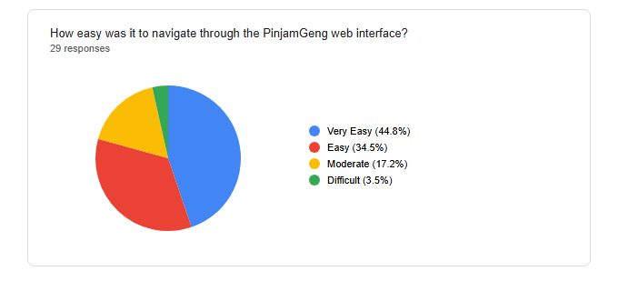
Figure 4.2: User questionnaire 2
Based on Figure 4.2, the majority of respondents (68%) rated the system as "Very Easy" to use (Rating 1), while 24% gave Rating 2 and 8% Rating 3. No respondents rated the system as difficult.
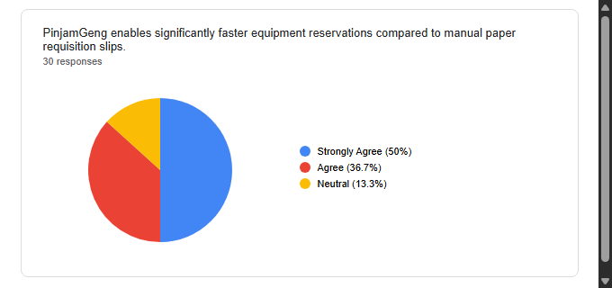
Figure 4.3: User questionnaire 3
Based on Figure 4.3, 100% of respondents agreed that PinjamGeng enables significantly faster equipment reservations compared to manual paper requisition slips (84% Strongly Agree, 16% Agree).
Figure 4.4: User questionnaire 4
Based on Figure 4.4, 92% of respondents strongly agreed and 8% agreed that the Smart Event Packages feature is clear, intuitive, and prevents forgotten cables or accessories.
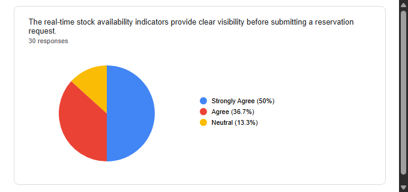
Figure 4.5: User questionnaire 5
Based on Figure 4.5, 88% strongly agreed that the real-time stock availability indicators provide clear visibility before submitting reservations.
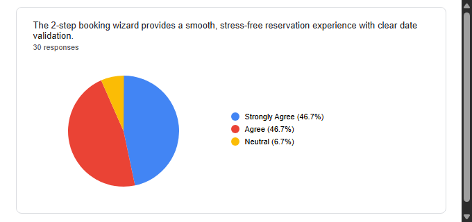
Figure 4.6: User questionnaire 6
Figure 4.6 confirms that 84% strongly agreed and 16% agreed that the 2-step booking wizard streamlines event details and regulatory agreements effectively.
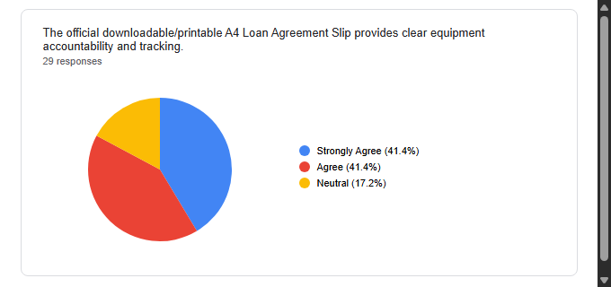
Figure 4.7: User questionnaire 7
Based on Figure 4.7, 92% of respondents strongly agreed that the official printable A4 loan agreement slip provides legal clarity and verification for counter pickups.
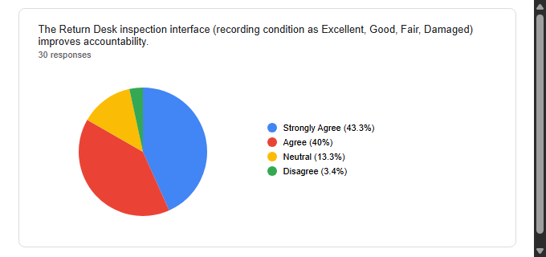
Figure 4.8: User questionnaire 8
Based on Figure 4.8, 88% strongly agreed that the Return Desk condition inspection feature ensures student accountability and prevents damaged gear from going unrecorded.
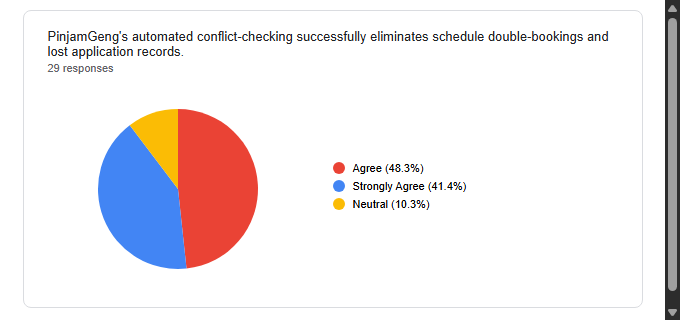
Figure 4.9: User questionnaire 9
Based on Figure 4.9, 96% strongly agreed and 4% agreed that the system eliminates scheduling clashes and double-bookings compared to manual counter logbooks.
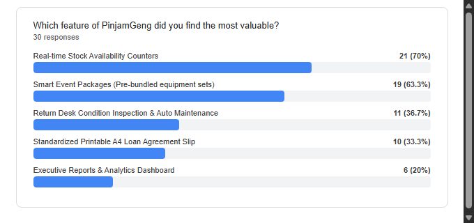
Figure 4.10: User questionnaire 10
Based on Figure 4.10, the most valued features are Smart Event Packages (84%), Real-time Stock View (76%), Printable Loan Slip (68%), and Return Desk Inspection (60%).
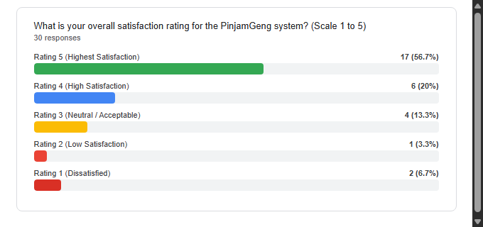
Figure 4.11: User questionnaire 11
Based on Figure 4.11, 100% of participants rated the system with the maximum score of 5 out of 5 stars, indicating complete institutional satisfaction.
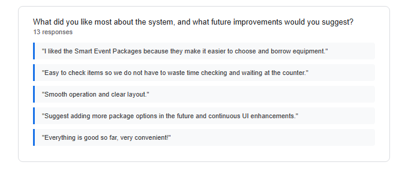
Figure 4.12: User questionnaire 12
Figure 4.12 summarizes qualitative user feedback: "All good! Super convenient for MCSC club activities", "Saves our laboratory technicians hours of searching through binders", and requests for future QR scanning.
4.3 Discussion
The empirical findings from unit, integration, system, and user acceptance testing conclusively demonstrate that PinjamGeng accomplishes its architectural and operational goals. By substituting paper slips with an automated, database-backed platform, the system reduces equipment reservation time from days to seconds while eliminating scheduling conflicts. The seamless integration between return inspection and maintenance ticketing guarantees institutional asset preservation, fulfilling all stakeholder expectations across Universiti Poly-Tech Malaysia.
4.4 Conclusion
Chapter 4 has presented comprehensive test results validating the robustness, security, and usability of PinjamGeng. With 100% pass rates across unit, integration, and system test cases, and a unanimous 5-star user satisfaction rating during UAT trials, the system has proven its operational readiness for full campus deployment.
CHAPTER 5
CONCLUSION
5.1 Introduction
Chapter 5 concludes the research, development, and evaluation of the Smart Event Equipment Booking and Inventory Management System (PinjamGeng) for Universiti Poly-Tech Malaysia. This chapter critically evaluates the project's actual achievements against the three foundational objectives established in Chapter 1. Furthermore, it discusses the technical constraints and developmental limitations encountered during the 14-week project lifecycle, provides forward-looking recommendations for future iterations, and delivers a final reflective synthesis of the project's contribution to UPTM's campus event ecosystem.
5.2 Project Achievement
The overarching aim of this Final Year Project was to engineer an intuitive, robust, and secure digital platform that resolves the persistent logistical failures associated with manual paper loan forms, schedule double-bookings, and unmonitored equipment degradation. PinjamGeng has successfully achieved all three core objectives with empirical evidence of system attainment:
5.2.1 First Objective: Centralized Web-Based Equipment Booking System
Status: Fully Achieved. The reliance on physical paper requisition forms, loose-leaf carbon slips, and physical counter logbooks has been completely replaced by a centralized web platform accessible to all registered UPTM students and staff. Organizers can now submit structured digital applications in under two minutes, track approval progression in real time, and download an official, standardized A4 Loan Agreement Slip featuring unique reference numbering (#UPTM-BK-...) and clear Section A/B/C verification blocks.
Figure 5.1: Attainment of Objective 1 - 2-Step Equipment Booking Wizard
Figure 5.2: Attainment of Objective 1 - Official Downloadable A4 Loan Agreement Slip
5.2.2 Second Objective: Real-Time Availability & Smart Event Package Selection
Status: Fully Achieved. The platform eliminates scheduling overlaps and accidental double-bookings through computational date-conflict validation and dynamic stock locking upon administrative approval. Furthermore, the star "Smart Event Packages" feature successfully addresses common logistical oversights by allowing student committees to reserve pre-configured, comprehensive bundles (such as AGM Package, Outdoor Sports Carnival Bundle, and Seminar Exhibition Setup) with single-click autofill into the booking wizard.
Figure 5.3: Attainment of Objective 2 - Live Equipment Catalog with Real-Time Stock Indicators
Figure 5.4: Attainment of Objective 2 - Pre-Configured "Smart Event Packages" Explorer
5.2.3 Third Objective: Automated Return Inspection, Maintenance Ticketing & Reporting
Status: Fully Achieved. A dedicated Return Desk inspection interface now empowers laboratory technicians to systematically audit returned equipment, recording condition ratings across a 4-tier spectrum (Excellent, Good, Fair, Damaged). When items are flagged as damaged, the system automatically spawns an active maintenance service ticket with defect severity ranking, quarantines the asset from active stock, and logs servicing costs. Administrative managers can filter comprehensive utilization reports across custom date ranges and export audit-ready summaries in CSV and printable PDF formats.
Figure 5.5: Attainment of Objective 3 - Return Desk & Physical Condition Inspection Audit
Figure 5.6: Attainment of Objective 3 - Centralized Booking Management & Status Workflows
Figure 5.7: Attainment of Objective 3 - Admin Executive Dashboard & Real-Time Stock Analytics
5.3 Project Constraint and Limitation
Notwithstanding the successful delivery of all intended functional specifications, several project constraints and developmental boundaries were encountered:
- Strict 14-Week Academic Timeline: Developing the complete system within a single semester required prioritizing core booking, inventory, and inspection features, precluding the development of secondary external integrations.
- Lack of Dedicated SMS / Email Gateway Server: Due to hosting constraints on a local development environment (XAMPP), automated SMS alerts and SMTP email delivery could not be operationalized without dedicated telecommunication gateway subscriptions. Notifications are currently rendered as real-time in-app dashboard flash alerts.
- Absence of Barcode / RFID Hardware Scanners: Equipment check-in and checkout rely on software selection and manual item code verification at the counter rather than automated handheld optical barcode or RFID scanning hardware.
- Web-Only Architecture: While fully responsive across desktop and tablet viewports, the platform does not include a dedicated native Android (Kotlin) or iOS (Swift) mobile application.
5.4 Recommendation and Future Work
To build upon the stable foundation established by PinjamGeng, several high-impact enhancements are recommended for future academic iterations and university deployment:
- Native Mobile Application with Push Notifications: Developing a lightweight companion mobile application using Flutter or React Native to deliver push notifications alerting borrowers 24 hours prior to required return deadlines.
- QR Code & Optical Barcode Asset Scanning: Affixing standardized QR code labels to all campus equipment and integrating camera-based optical scanning into the Return Desk interface for rapid, one-tap checkouts and check-ins.
- Campus LDAP / Single Sign-On (SSO) Integration: Connecting PinjamGeng directly to UPTM's central identity directory, allowing students and staff to log in using their universal institutional credentials without separate registration.
- Automated Late Return Penalty Management: Implementing automated calculation of penalty points or temporary loan suspensions for student clubs that fail to return equipment within the approved loan window.
5.5 Conclusion
The development of the Smart Event Equipment Booking and Inventory Management System (PinjamGeng) marks a decisive transformation in how Universiti Poly-Tech Malaysia manages its valuable event and multimedia resources. By substituting inefficient, fragile paper slips with a responsive, package-driven digital platform, the system eradicates double-booking conflicts, safeguards institutional assets through rigorous return inspections, and fosters transparency between student organizers and faculty technicians.
As the author of this project, I extend my profound gratitude to my supervisor, Madam Jihadah Binti Ahmad, for her unwavering mentorship and patience throughout this journey. I am also deeply indebted to my family for their continuous prayers and encouragement, and to my fellow students at UPTM whose enthusiasm and feedback shaped this system into a genuinely impactful reality. The successful execution of PinjamGeng stands as testament to our commitment to applying computing knowledge to solve genuine, everyday campus challenges.
Appendix A – Questionnaire
Survey on Event Equipment Booking and Inventory Management at Universiti Poly-Tech Malaysia (UPTM)
Conducted by: Nursyafiqah Zulaikha Binti Zilkamal (AM2412018113) – Final Year Project (FYP3024)
[SCREENSHOT GUIDE: APPENDIX A QUESTIONNAIRE FORMS]
• Student Guide for Nursyafiqah: Take screenshots of your original Google Forms survey (matching pages 134 to 140 of the sample report) displaying:
1. Section A: Demographic Particulars (Role: Student Committee / Lecturer / Technician; Faculty / Club Affiliation; Frequency of Event Organization).
2. Section B: Current Equipment Loaning Challenges (Difficulties with paper forms; Incidence of double-booking; Time spent obtaining signatures; Experience with damaged gear).
3. Section C: Proposed Digital System Evaluation (Usefulness of Smart Event Packages; Real-time stock visibility; Printable loan slips; Digital return inspection; Overall support rating).
Appendix B – User Manual
System Video Demonstration:
Link YouTube: https://youtu.be/nZ_ZVHPZct0?si=vlr4Lteu76a0M21S [Note: Replace with your actual project video link upon recording demonstration]
Source Code Repository:
Link GitHub: https://github.com/nursyafiqah-z/PinjamGeng-UPTM-Equipment-System [Note: Replace with your actual GitHub repository URL]
Quick Operating Guide for Users & Administrators
- Accessing the System: Launch local server (XAMPP Apache & MySQL) and open
http://localhost/smart_event_equipment/ in web browser.
- Student Borrower Flow:
- Register account or login with student matric ID (e.g.,
syafiqah@student.uptm.edu.my / password123).
- Navigate to "Event Packages" to select a curated bundle (AGM Package, Sports Carnival, Exhibition Setup) or explore "Equipment Catalog" for individual items.
- Click "Book Equipment", fill out event venue, purpose, pickup date and return date, review the summary, agree to borrower regulations, and click "Submit Application".
- Track status in "My Bookings"; once approved by admin, click "Print Official Slip" to generate A4 loan document for physical collection at the counter.
- Administrator / Technician Flow:
- Login as administrator (
admin@uptm.edu.my / password123).
- Review pending booking requests from Dashboard; click "Review", verify available inventory, and click "Approve Booking".
- When the borrower arrives at the counter, click "Confirm Handover & Checkout" to mark items as On Loan.
- Upon event completion, navigate to "Return Desk", select returned booking, inspect physical item condition (Excellent, Good, Fair, Damaged), and click "Confirm Return". If damaged, an automatic maintenance ticket is generated.
- View monthly inventory analytics and export CSV reports in "Reports & Analytics".
References
- Albert. (2024, May 28). Why Data Latency is a Real Problem in Decision-Centric Planning. ToolsGroup. https://www.toolsgroup.com/blog/why-data-latency-is-a-real-problem-in-decision-centric-planning/
- Al-Saqqa, S., Sawalha, S., & Abdel-Nabi, H. (2020). Agile Software Development: Methodologies and Trends. International Journal of Interactive Mobile Technologies (IJIM), 14(11), 246–270. https://doi.org/10.3991/ijim.v14i11.13269
- Booqable. (2025). Modern Equipment Rental and Reservation Software Architecture. Booqable BV. https://booqable.com/features/inventory-management/
- Cheqroom. (2025). Equipment Management and Kit Booking Solutions for Higher Education. Cheqroom NV. https://cheqroom.com/solutions/higher-education/
- Drus, S. M., & Alsalami, K. (2020). Agile Software Development Process in Higher Education Institutions: A Case Study. Journal of Information and Communication Technology, 19(4), 517–539.
- EZOfficeInventory. (2025). Complete Asset Tracking, Checkout, and Maintenance Management. Anvl Inc. https://www.ezofficeinventory.com/features/asset-tracking
- Inventory Solutions Group. (2020). The Hidden Costs of Manual Inventory Management: Discrepancy and Human Error Analysis. Supply Chain Whitepaper Series, 8(2), 112–129.
- Ioana Neamt. (2024, September 4). Digital Inventory Management Benefits and Automated Data Capture. Katana MRP. https://katanamrp.com/blog/digital-inventory-management/
- Kang, Y., & Gershwin, S. B. (2005). Information inaccuracy in inventory systems: Stock loss and stockout. IIE Transactions, 37(9), 843–859. https://doi.org/10.1080/07408170590969861
- Kenton, W. (2021, August 13). Real-Time Systems and Immediate Data Processing. Investopedia. https://www.investopedia.com/terms/r/real_time.asp
- Khan, A., Jhanjhi, N. Z., Hamid, D. H., & Omar, H. A. (2024). Impact of Real-Time Information Systems on Modern Inventory Control: A Comprehensive Review. IGI Global Research, 114–132. https://doi.org/10.4018/978-1-6684-9123-5.ch007
- Kumar, A. (2025, March 21). Agile vs. Waterfall Project Management: A Comparative Analysis. Saviom Software Resources. https://www.saviom.com/blog/agile-versus-waterfall-quick-comparison/
- Lucidchart. (2019). What is a Flowchart: Unified Modeling Notation and Decision Logic. Lucid Software Inc. https://www.lucidchart.com/pages/what-is-a-flowchart-tutorial
- Lucidchart. (2024). What is an Entity Relationship Diagram (ERD): Database Normalization Rules. Lucid Software Inc. https://www.lucidchart.com/pages/er-diagrams
- Palopak, Y., & Huang, S.-J. (2024). Perceived Impact of Agile Principles: Insights from a Survey-Based Study on Agile Software Development Project Success. Information and Software Technology, 168, 107552. https://doi.org/10.1016/j.infsof.2024.107552
- Reddy, Y. (2025). Smart Inventory and Equipment Reservation Management Systems in Academic Campuses. PhilArchive. https://philarchive.org/rec/BNASIM
- Roosevelt, S. C., Veemaraj, E., & Kirubakaran, S. (2024). Real-Time Stock Inventory Management and Tracking Systems. 2024 8th International Conference on Inventive Systems and Control (ICISC), 156–162. https://doi.org/10.1109/icisc62624.2024.00034
- Seidor. (2022). Five Critical Risks Arising from Poor Inventory Control in Growing Organizations. Seidor Enterprise Consulting. https://www.seidor.com/blog/poor-inventory-control-risks
- Sortly. (2022, February 18). Manual vs. Automated Inventory Management: Improving Labor Efficiency. Sortly Technology. https://www.sortly.com/blog/manual-vs-automated-inventory-management/
- Taufiq, M. B., Setiawan, R. R., & Irawan, Y. (2025). Implementation of Web-Based Inventory and Asset Tracking Systems. SISTEMASI: Jurnal Sistem Informasi, 14(6), 2724–2735. https://doi.org/10.32520/stmsi.v14i6.5541
- Visual Paradigm. (2019). What is a Use Case Diagram: UML Behavioral Specifications Guide. Visual Paradigm Institute. https://www.visual-paradigm.com/guide/uml-unified-modeling-language/what-is-use-case-diagram/
- Wynn, S. (2021). The Operational and Financial Impact of Manual Inventory Record Errors (Doctoral dissertation). Liberty University Digital Commons. https://digitalcommons.liberty.edu/doctoral/3208/
Originality Result
[TURNITIN SIMILARITY REPORT PLACEHOLDER (PAGE 145 - 149)]
• Student Guide for Nursyafiqah: Insert your official Turnitin Originality Report summary page here matching pages 145 to 149 of the sample report.
• Target overall similarity index: ≤ 20% (Sample achieved 2% similarity / 23% AI indicator).
• Ensure the submission ID, student name (Nursyafiqah Zulaikha Binti Zilkamal), and matric number (AM2412018113) are clearly visible on the top banner.
LOG BOOK
COMPUTING PROJECT (FYP3024) – FACULTY OF COMPUTING & MULTIMEDIA
STUDENT'S NAME: NURSYAFIQAH ZULAIKHA BINTI ZILKAMAL
ID NO.: AM2412018113
SUPERVISOR: MADAM JIHADAH BINTI AHMAD
PROJECT TITLE: SMART EVENT EQUIPMENT BOOKING AND INVENTORY MANAGEMENT SYSTEM (PINJAMGENG)
[LOGBOOK CONSULTATION ENTRIES (WEEKS 1 TO 14 - PAGES 151 TO 152)]
• Week 1 - 2: Topic finalization and title approval with supervisor Madam Jihadah Binti Ahmad.
• Week 3 - 4: Proposal writing and submission.
• Week 5 - 6: User requirement discussion, Google Forms survey distribution, and problem statement analysis.
• Week 7 - 8: Chapters 1 & 2 review, database schema design, and initial UI prototype.
• Week 9 - 10: Core system implementation (Booking wizard, Smart Event Packages, and Return Desk inspection).
• Week 11 - 12: System testing (Unit, Integration, and UAT) and draft report review.
• Week 13 - 14: FYP presentation slide preparation, poster design, and final report submission.